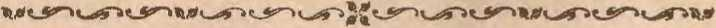
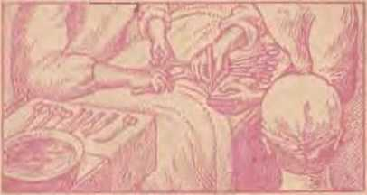

Representative of Jehovah's witnesses interviews Trunian on draft cases
Review of decisions made by Big Four foreign ministers
Progress accelerated under pressure of global war casualties
A glimpse at some ant communities
OCTOBER 8, 1946 semimonthly
THE MISSION OF THIS JOURNAL
News sources that are able to keep you a:wake to the vital issues of our times must be unfettered by censorship and selfish interests. "Awake!" has no fetters. It recognizes facts, faces farts, is free to publish facts. It is not hound by political ambitions or obligations; it is unhampered by advertisers whose toes must not be trodden on; it is unprejudiced by traditional creeds. This journal keeps itself free that it may speak freely to you. But it does not abuse its freedom. It maintains integrity to truth.
"Awake!" uses the regular news channels, but is not dependeat on them. Its own correspondents are on all continents, inscores of nations: From the four corners of the earth their uncensored, on~the!scenes reperts come to you through these columns. This journal's viewpoint is not narrow, but is international. It is read in many nations, in many languages, by persons of al ages. Through its pages many fields of knowledge pass in review—government, commerce, religion, history, geography, science, social conditions, natural wonders—why, its coverage is as broad as the earth and as hi£h as the heavens.
"Awake I" pledges itself to righteous principles, to exposing hidden foes and subtle dangers, to cha.mpioning freedom for all, to comforting mourners and strengthening "those dsheartened by the failures of a delinguent world, reflecting sure hope for the establishment of a. righteous New World.
Get acquainted with "Awake!" Keep awake by reading "Awake!"
._,.^^^^-.,^^^^u
l'DBLISBED St:utMON'l'RLY Dr WATCHTOWER BIBLE ^AND TRACT SOCIETY, IN'C.
117 Adams Street Brooklyn 1, N. Y., U. S. A.
N. H. KNunn, Pi'eHident W. E. Van AMBURGII, Secretary
Five cents a copy
Remlttanm: I'lcuse romlt 1103181 note or by postal or Wmi moneY’ '-n-.-f or by bank draft. Wh^n toiu or '"jrirency 13 lost Jn rho ol"\inarv maik. Ihcr •!• no re(lr<ss. nemlttanw tl'oni counttlas whrN the $4jcJ«ts hn}l no Rrimd oi1t1CS iiifl’ be mndc to Ife Brooklyn olllce, but only bY lnt.erO^Uo>t:;l pwm moo<'Y older. Receipt or • new or ronowal •un.scijtUon wUI ho .aeknow'Jcdged uol)i when reque.sted.
Notice to SuilscRiin:its
One dollar a year
Notloo of cxplrat101: Such noiloo ' 'lent wlb tbe □ritual nt. le.at two itd.ut'ls hetnu tho. :J'\lb^ expi^t. !'(««• wI:W prouplly.
Change ol address: I'Jeu'l ••nrl •riY chouge nr u.drhc:;:i dluct rn lis r.1llier tbko tu Ule nost omoo. Your n;Qn«t >'hould renh OlS at !rfi$T. three wcclo! bctore 11ie dnto ot losw> wltb which It iJ ro lake <<*£ S:i>Dl your nl<l m well as the new address.
l'l.'nl.ued as seoonhill!JIS motl<r •t BrooklYn, N. Y., Act ot Mnreh 8, 1879, l'rlnt.ld il U. S. A.
CONTENTS
Resolution to President Truman
Personal 1 interview by Committee 4
Ooiu't Denial Ground for Pardon 5
Preliminaries to the Peace Conference 9
Uedical Scienco During the War
Science Cannot Resunect the Dead
Some Altstonisbing Things Ants Do 2CI
“Thy Word Is Truth”
When God's Fatherhood to Man Ceased 25
Registration at 18 Still Compulsory
Practical Joke Tumed iuto Blessing
/WAKE/
Volume xxvii
Brooklyn, N. Y., October 8, 1946
Number 706
ON August 10, 1946, at Cleveland, Oliio, tbe Glad Nutions Theocratic Assembly of Jehovah's witnesses, upon the motion of Nathan H. Knorr, president of the Watchtower Society, unanimously adopted a resolution addressed to the president of the United States. '.rhe resolution requested Mr. Truman to exercise his pardon powers under the Constitution and grant relief to over 4,000 of Jchovabis witnesses wrongfully convicted and imprisoned as criminals under the Selective Training and Service Act. After briefly summarizing the facts, showing mistreatment of such ministers of Jehovah by hoards and courts under the Act, the resolution was preceded by strojig declarations. Among other things it was declared to President Truman as • follows:
Now that the war has ended, and especially s i n e e all political prisoners in countries conquered by the Allies and Russians have been freed, and amnesty given even to a million despised Nazis (who eruelly persecuted Jehovah's w i t n e s s e s in Germany), it is now time to request that steps be taken to restore these mission a :ry evangelists to the po^ sition they occupied nnder law before their convictions.
The White House
Although no mail can restore to these thousands of misHionary evangelists the time that they have served illegally iu prison, executive clemency by the president of the United States, exercised mtdcr his pardon powers, would restore the civil rights and privileges to all of them and result in the immediate discharge of those now imprisoned.
The resolution to President Truman provided:
Now, THEREFORE, DE IT RESOLVED THAT
(a) The president of the United States be formally requested by a representative of Jehovah's witnesses, in behalf of this assembly, of alJ of Jehovah's witnesses throughout the earth and all other lberty-lovin.g people in this world, to immeUiately issue an order declaring executive demeiicy for sneh missionary evangelists, known.as Jehovah's witnesses, convicted under the Seleetive Training amel Service Act, and grant them full pardon, restoring to them their civil rights, which is nectissary in order to redress the deprivation of !'heir rights and in order that justice may be done.
(b) The chairman of this assembly duly certify to the adoption of this Resolution and deliver :it to the representative of Jehovah's witnesses for personal presentation to the president of the United States, together with a statement of the history of the treatment of Jehovah's witnesses under the Act, as sonu as is convenient for submission.
This resolution was unanimously adopted by upward of 60,000 delegates at Jehovah's witnesses’ convention.
Personal Interview by Committee
For presentation of the resolution mid history an appointment for a persona] interview with President Truman was procured. This was nxed for- 12: 30 p.m. (Ji:astern Standard Time)i Friday, September 6, 1946. Accordingly, on such date and at such time \he committee of three appeared at the White llonse in Washington. The emnmittee was composed of (1) a Missouri law-yer, personal and i?olitjeal friend of .J.lr. Truman, who arranged Ihe apj)ohitmeJit for the committee; ( 2) counsel for Jehovah's witnesses, and ( 3) a fnll-tijne pioneer minister of .Jehovah’s witnesses who during tJie first W orlcl 'V ar was an army ammunition officer under Cnptain Rany .S. Tnunan. The interview and presentation lasted about forty minutes.
When Mr. Truman was informed ot the purpose of the visit he stated that the matter of executive clemency for men convicted and imprisoned under the Draft Act had been referred by him to the attorney general for study and a report to him ihout what could be done?. He was then informed that thp committee desired to present tlie side of Jehovah's witnesses to him. He was tolcl, also, that more than 60.000 persons who adopted the resolution had ordered the emnmittee to proyida him with the resolution and facts. In reply Mr. Truman stated that 1w would listen to wliat tJte committee linad to say and would see that the projicr thing w as done about it. He added, however, that he had heen a soldier, was a "fighting man'', and did not have anv usc for a man who would not light foi and protect his country.
He was theu informed that Jehovah's witnesses were, neither pacifists nor conscientious ohjcctors, but were ordained ministers of .J ehovali God claiming their neutrality aud. exemption from service, like ministers of religion, to preach to the people. To this statement !h. Truman declared that he would like to know what would have become of this country in the recent war if every person in the Uniterl States had taken the stand tliat Jehovah's witnesses took— refusing to be inducted into the armed forces to fight. In answer he was told that not every person could take the stand -because not all persons in the , United States •were ministers of J eho-nah; but that if every person in the llnited States were one of Jehovah's witnesses Jehovah God would •fight for and protect His people.
Then the president 'vas reminded of examples recorded in the Bible, of how Jehovah fought the e-newy hordes arrayed against His people an<l protected the Israelites in battle. while commanding tliem to stand still and sing the praises of Jehovali. The president said he did not believe it and he clid not think tliat the rulers of the enemy nations believed it.
Mr. Truman waH then told that Jehovah's witnesses did not oppose the conscription of men .:mel tbat they believed the nation had a right to raise au army, hut that, like the ministers of Jehovah in the clays of the Israelite conscription wlio were exempted from going to war, ,J elmvah’s witnesses today also claimed. exemption, as such is provided for in the Draft Act.
Mr. 1'rmuau \as again told that the committee desired to present the Ride of J ehovnh's witnesses so that lie could better understand tlw problem to he solved. He stated that he would listen Imt that he was prejudiced. However, he added that in spite of that he would Reo that those convicted got a fair consideration and just decision, after he would be finally advised by,the attorney general.
Then the certified copy of tlie resolution adopted by thp Glad Nations Theocratic Assembly wa::; banded to President Truman. He was told that it was moved ljy the president of the Watchtower Society and unanimously adopted by more than 110,000 delegates and persons of g.md-will. His consideration of it was respectfully iiivited. He read it quickly.
Following the pTesentation of the 1'esolntion the history of the mistreatment of Jchovnli’s witnesses under tlie Act hy draft boards was given. The president was told how the National Headquarters of the Selective Service System had recognized Jehovah's witnesses as a religions organization with ministers entitled 1o exemption. In great detail he wns shown how .Jehovah's witnesses were regularly engaged in preaching from house to house as did Christ Jesus and His apoE'tles. Mr. Truman was told that Jeljovah's witnesses hear to the people Bihle literature* explaining that Goers kingdom of rightponsness is to he .fully established in all the earth as humanity's onJy hope. He was told that m(l';t of the peopl p no longeT went to churches nnU therefore, it was necessary for the message to he taken to them iii their homes. He was informed that Jehovah's witnesses arc the onJy ministers in the country who are meeting tlie needs of' tlw people liy giving them free Bible education in their homes through Bible studies eoudnct.Pcl hy ministers.
Hundred::; or draft boards that had received the evidence submitted to them }ju(1 classified Jehovah's witnesses as ministers, exempting many thommmis of them from t raining ami service, the president was told. lit was also informed that many other draft board::; were prejudiced ancl <lid not exempt over -l,OOO o!
Jehovah's witnesses. It was shown that as a result these th ousands of men were prosecuted for failure to comply with ell-aft-board orders commanding them to do training and service.
l\lr. Truman then interjected that he was still prejudiced. He also added that he had no sympathy for Jehovah's witnesses because of their disrespect for the flag by refusing to salute it and their refusal to show respeet for the law of the land by complying with it . tit this point he •was informed that Jehovah's witnesses had respect for the flag and showed they were good citizens of: the United States. He was informed that not one of Jehovah's witnesses had been disloyal to the government at any time; that they all showed their respect for tie flag and the country by fighting for freedom of speech, press and worship in the courts and otherwise. He was told that Jehovalt's witnesses on the committee, one of whom he knew -personally and with whom lie had been a::;sociated as a soldier and fellow army officer, had the highest respect for tlie flag and were loyally devoted to the country and the .freedoms for which it i\toorl. The president was reminded thai al others of J e-hovali’s witnesses had the same proper regard for the country and flag, altlwngh they were forbidden by God's law from saluting it or the flag of any nation. Mr. Truman said that perhaps he had been misinformed on tliis and that at least he was glad to get that statement of the position of Jehovah's witnesses. Tlris was especially impressive to hi1ii since most of the statement about the position of .Tf'Jiovah's witnesses on the flag was made by tlie committee's member who had served as Mr. Tnmmn's am mmiition officer during the fint World \VaT.
Court Denial of Defense
Ground for Pardon
The conversation then returned to the matter covered by the resolution. Mr. Truman then repeated that he had referred the matter to the attorney general for a repoi’t. He arlded that it would do no good to argue the matter before him, because he was waiting ttnd depending on the attorney general for advice as to what to do. Notwithstanding this, there was theu next presented. the most important ground for pardon, namely, the illegal tria 1 and conviction of .1 ehovah's witnesses in the federal courts. The president then comsented tn he.ar this last ground for the requested reljef.
History of the struggle of Jehovah's witnesRes for tlw right to be heard in their defense in the federal courts was snecinetly given. It was pointed out how the federal courts trying J ebovah's witnesses for failure to report for duty as ordered bv the draft hoards had heeu denied the right to show that the hoards' orders were void because they were exempt by law a::; ministers. It was then shown that the holding’ of the Supreme Court of the United States, that all tlie eourts had illegally denied Jehovtth's witnesses the right to make their defenses, was strong and additional ground for granting the requested pardon.
TJw interview and presentation ended at about 1 p.m. At the close )fr. Truman wa:; given some literature distributed by Jehovah’s witnesses to prove to him that they as missionary evangelists were engaged in free BihJe education of the people: The hook "Lt>t nod Be Trne", the booklet "Be G/<{£d, Ye Nations". The Watchtower for September 15, 1946, containing the article “Children in the <Time of the Encl' ", and He first issue of Awake! magazine ( August 22. J 9-!G) eon-taining, autong others, thr articlp on juvenile delinquency. Mr. Tnunan’s attention was called to the juvenile clelin-qnency article in the .Awake! magazine. n was pointed out that it showed that thi! source of that national problem was the delinquency of parents who shirked their responsibility of properly bringing np children. Tlten his attention was called to the article in The Watchtower that presented the Bible proof of the duty of parents to themselves to instruct their children day and night and at all mealtimes.. The president was interested. He agreed that the problem of child delinquency should be blamed on the parents. Then he also accepted a eopy o1 tlie complete report of the Glad Nations Theocratic Assembly of Jehovah's witnesses in the 48-page issue of The Messe-nger for August 12, 1946.
In parting, the president's attention was c’Rlled to the fact that the 4,000 of Jehovah 's wi tnes::;es, in wliose behalf the Teque:st for relief was given to him, had not taken their stand to evade training and service under the Act. It was shown that they were found in this predicament for righteousness5 sa kE', for their refusal to nhandon their joh of preaching tbe gospel of Jelwvah’s kingdom. He was informed tliat they wer ′ merely trying to keep covenant with Jehovah, which no man or nation had the right to make fliem break. The preRident said that the matter would he properly considered hy him in spite of liis prejudice against anyone •who would not figlit fol' the country and defend it.
Clergy Amnesty Appeal
(oj^ Conscientious Objectors
Since the end of the war the matter of amnesty has been given mneli attention and publicity. From time to time big clergymen and religious organizations havP. made statements, which the secular press has pnhlislied, ahont the desirability of granting mnnesty "to all conscientious objectors cjonvirf t:<l and imprisoned under the Act". I11 those published statements slighting reference ha::; heon made to Jehovah’s witnesses. The dergy, who themselves rlid iiot have courage enough to take their stand on ibe t-:idf' of .1 eho-vah clnring the war, are now belatedly crying out protests jn bphalf of the “conscientious ohjpeton;" in an attempt to cover up and divert attention from their own compromising eonduet during the war. They cry out that "4,500 conscientious objectors" have been imprisoned under the Act. It is true that 4,500 men have been imprisoned under the .Act. But only a small percentage of those 4,500 liave been conscientious objectors. Less than five hundred of the 4,500 men cwnvicted and imprisoned were conscientious objectors. Over 4,000 of the 4,500 were the faithful ministers of Jehovah Ood. To lump together as one group all the 4,500 convicted and imprisoned is to jgnore the facts, namely, that Jehovah's witnesses (numbering more than 4,000 of the 4,500 imprisoned) are neither conscientious objectors nor paciiists. Tie conscientious objectors, numbering less than 500 of tlte 4,500 imprisoned. refused to participate in war, basing their i‘e-Jusal on a variety of religious, political, social and academic grounds but making no claim to statutory exemption by reason of a ministerial status such as that rightfully claimed by Jehovah's witnesses because of their contract relationship with .Almighty God which obligates them to obey Him exclusively by publicizing, uninterruptedly, in peacetime and in wartime, His kingdom, among the people.
Public Press Editorials
In spite of the appeal being made by tlie clergy for the small group of conscientious objectors while the larger numlier of those imprisoned have been Jehovah's witnesses, the religionists' amnesty movement has resulted in arousing a few courageous newspapers to hack up the request for relief for the imprisoned men. For instance, the Denver Post-, leading dajly newspaper in the Rocky Mountain region of the •West, Ou Saturday, August 31, 1946, published an editorial entitled "Why Not an thtnne sty for the Conchies t" Although that editor, like others who blindly follow the pattern drawn for the public press by amnesty-minded clergymen and religionists, improperly conf uses imprisoned witnesses of Jehovah with the comparatively small number of conscientious objectors, his attitude is noteworthy. •While considering his remarks quoted below, readers of this journal can keep in mind the distinction between conscientious objectors and Jeliovab's witnesses as defined in the foregoing paragraphs. Among other things the Den ver Post editor said:
In the light of President Truman's emphasis 01 freedom of conscience and religion in his speech March 6 before the Federal Council of Churches of Christ in America in Col.umhus, Ohio, more than' 300 leading ministers of all denominations are appealing to thim to grant amnesty immediately to all of these men.
'l'hree Denver clergymen—Dean Paul Roberts of St. John's Episcopal cathedral, the Rev. Samuel W. Marble oi Trinity Methodist church and the Rev. Erdmann Smith of the First Baptist church-are among the signei’s of the letter, transmitted to the White House hy Dorothy Canfield Fisher, honorary chairman of the Amuesty committee.
What is the genera.} public feeling tegard-ing the "conchies" now 1 The passions of wartime have cooled. It is possihle to consider them now with more objectivity. They did not want to go to war, but, in the great majority of cases. theh’ objections were based on sincere convictions. They paid a heavy price, too, to stand hy their beliefs. No compensation, no service points, no protection under the bill of rights. no veterans' benefits, no family alotments, no discharge compensation. Most of tl1em were teachers or farmers or members of religions sects, like the Jehovah's witnesses, who told in many a court that their tenets firmly hade them to refrain from warfare. . . .
Political arrests have always been abhorrent to Amcrii-ans. After World \Var I, the continued incarceration of I. W. W.'s and other draft objrctors hecame a hot issue. Many people came to regard tbe continued imprisonment not as a military procednre but as a political one. Tbe case of Eugene Debs, Socialist leader, accused of hindering the war, became a cause celebre before he was released from Atlthwtu pirison ill 1921.
The majority of citizens undoubtedly would support the president iu amnesty :for the conscientious objectors now bciore their cases become political footballs.
According to published reports, none of the clergy and their amnesty-minded coreligionists havr ever undertaken to interview President Truman personally iu hehalf of the imprisoned men. The moRt tlH’v have <loni' has heen to send the president letters and petitions signed by clergymen "ho themselves took no stand that caused them to he persecuted during the war. Hu<'h efforts hy religion iflts have brought no ei-pression from the president as to his attitude toward thp problem. Jehovih*s witnpsses being Hip first lo interview him personally on Uh' question, it is hoped that the publication of this report of thf' interview with him wiH show his attitude to all interested ones. Tt is olwious that if anything at all will he done by him it will not be clone soon. Tn the meanwhile tlw faithful witnesseH of Jehovah will hP required to :-;u J'fpr for righteousness' sake behind prison hars. Their commission from Jehovah to ae-t as Hh; ordained ministers has not been canceled or amnulJpd hv their wrongful conviction and imprisonment.
Regardless of whether President Truman takes an attitude like that of Pharaoh who refused to If't .Jehovah':-; pt>ople go, or that of King Artaxerxes who hy letter exempted .Jehovah's ppoplc from duties of state, it i::; certain that •an-nonncing J ehovabfs Kingdom’" ii all this land and in cverv land will continue with increasing vigor by faithful witnesses of Jehovah iiot under 1'E'st raint.
Jehovah and His witnesses do not depend on the granting of clemency to his witnesses wrongililly convj<'ted, in order to carry on Hi:-; work in tlie earth at this time. Yet they do request that, in harmony with the Constitution, the government make due amends for the wrongs committed, contrary to the law of this land, against His people in the comts of the land. To this <‘nd they have ap-pealt>d to the highest cxflcntive authority in the land, the president. He is the only one who can tlo auyUdrg to remedy th(' situation. Even it' lie declines to exercise his powers oi‘ rails to exereise them properly, Jrhovah's witnesses will continue to preach in liehalf of aud wait upon the Supreme Om^ of tlw Universe, to whom they wm npp('al to vindicate llis name and Hh; people for the wrongs committed against them.
Perhaps you will he interested in the details and history of the five-year fight between thf Department of Justice of the United States and J ehovah's wit-nesseR in the court::;. If yon desire' to know the l'nll truth ahnu( the outrages committed against tlw nwrv tlian four thousand imprisoned missionaries you "•ill enjoy reading tlw articles "Defemse Denied .Jehovah’s witnesses hy Courts" and "Defense Granted Jehovah's witnesses hy Courts"' 1hat, respectively, wm apppar in the two succeeding issues of this journal.
llny do thl' heatlli'n rage. aiid tJie peoplp imaginp a 1‘ttiil 'hiny'l Tlip kiii!J‘ of tl:e earth 11et themselves. tmd the rulers lake cocmsel tog"t/ .1', ayaiii11t lilt' Lnril. and agaiUBf his anointed. :m!fiug, Let 11.? break thFir IJtmtl," tt!'twclrr, iiiid twt away their cordis from ttx. Hr tlmt 8-itteth iu tilt' ltt'<itJii:J
11ftall lough: the Lord shall hare tltvm iu dcrtsVn-.
—Psaloi 2:1-4. ■
"lEi' THJf:RE is anotJier war, atomic
J- bombs arc certain to he, used unless a more? destructive weapon is developed. World wars must stop." So said Senator Edwin C. Johnson in commenting on the subject of atomic control, and thereby stressed the necessity for peace, and indirectly lhe importance of' the J)cace councils and cojifcrence in this war-torn world. For. technically at least, 1he war is not over, even though lighting has ceased for the present. Tlie various nations composing tiie victorious side of the recent conflict arc as anxioni' I'oi peace and the making ot:' the necessary treaties of peaee as t.re the defeated nations. wlio suffer most. keenly.
rhcre has, therefore, been much talk ahont Jjeaco, or the attainment of those arrangements that will insure peace. It is now well ovp.r a year since hootilities ceased, aml still the center of tlie ditli-eulty, the German problem. has not heen toncliecl. Austria, too, is an important factor in the solution nf tlie peaee problem. -
It is sajCi that every world statesman learns sooner or later of the vital position Aus tria occupies in tho structure of Europe, 11ml that if one wishes to subjugal e or liberate all of eastern Europe nne must J,egin with Austria. Vienna has been called the gateway to the East, but to Stalin, who doubtless has taken some notice of the transportation system of Europe. Vienna is tlie gateway to Ihe West. 1t all depends upon tlw angle from which one views the map.
The Soviet Union has some 140,000 troops in Austria, and armies of occupation in Hnugary, Rnnmnia and Bul-gnrin. That gives the Soviet not a little influence in those countries, and treaties with these lands nre likely to he in Russia's favor. Russia has not been in a hurry to move out.
All this, of course, has a bearing on the importance of Europe itself to world-economy mid world-trade. It is not merelv tlie fate of this or that nation that is in tJie balance. Europe has until rect=>ntlv been the virtiml center of the world, and vast readjustments had been made, cYeii though but temporarily, when all of Europe was engulfed in war. Now that tbe war is over, Europe i" comparable to a vacuum, and, since nature abhors a vacmun, some setup must take the place of its previous organization. Witli the exception of the horder states the people Itave no self-government. Something must occupy the plate of government until the peace treaties rut these nations back on their ovm.
Though Europe is sometimes considered to he merely a peninsula extending westward from the Asiatic mainland, it is a very important peninsula. It:; population is far from negligible. In Europe proper, excluding Hussia and Britain, tliere are ruoro people tlian there are in the British Commonwealth, the Soviet Union and all of the •Western Hemis-sphere. 'he peace of Europe, therefore, is an important matter.
The London Conference of H145 having ended in faiure, another conference, designated the Council of Foreign Ministers (of thf’ Big Four), was scheduled to meet in April of 194g. Russia was represented by Molotov, America by Byrnes, France by Hidaull, and Jingland by Beyin. Tt debated for three weeks. Results were most discouraging. The ministers of the f our big powers finally decided to call off their meetings fur a month's recess and to meet for further talks iu June and Tnly. They had not reached an agreement on it twenty-five-year alliance to see that Germany remained disarmed, and were not sure tlmt disarmnment was actually being carried out so far. A committee was set up to investigate what was being floue about it in the four zones of occupation. •Was Russia disarming Ihat part or Germany nnder her control! Was Britain properly disarming in its zone? The commit tet- would ascertain the facts. Russia said the operation of armament plants in her zone was not to be investigated !
This session of tlie council of foreign ministers also made some revision in th . Italian armistice terms, but that was a minor matter. Nothing nmch seemed to have been accomplished. but at least thei’e had heen plenty of talk, which the different ministers could reflect upon during theh recess. The American representative, Secretary nf State James F. Byrnes, upon arrival in Washington, arranged to make his report, which was published in the press on May 21.
It appeared that a great deal of the time had been devoted. by the council to discussion of who would get what. Neither America nor Britaiu had heen annexing territory. Russia had, and apparently intends to lioJd 011 to what she lias annexed. America’s attitude seemed to be more like that or a merchant who seeks to lmild up good-will among his customers or prospective customers. The secretarv mentioned that while America had udvanced $900,000,000 to Italy to keep it on its feet, Russia demanded $100,000,000 reparations for damage done to Rnssia by Jtalian troops fighting together with the Germans. True, Italy had. hirned to the side of the Allies and aided them in tlie final stages of tlie war, but Russia still felt sbe should malm some recompense for the damage inflicted on Russian territory. No final decision was reached.
The next subject was the Italian colonies. Hnssia had previously made a claim for trusteeship of Tripolitania, but now withdrew that demand. The American delegation held the position that the colonies should he administered by a United Nations trusteeshiv. This •was not decided.
Should Greece get the Dodecanese islands 1 The general consensus of opinion seemed to favor this transfer, though nothing definite-! was done.
Agreement on the Balkan treaties was hindered hecanse of economic factors. The Soviet government also stood out against including in the treaties any ar- . rangemcnt for freedom of commerce on the Danube, which is the gateway to central Europe, and as important to that region as the Mississippi is to the central part of the United States.
The main bone of contention, however, was Trieste, a port certainly very important to central Europe, but which since World War I had been held bv Italy. However, Italy is not now in position to decide what shall l)e done about it. Russia wants the port to go to Yugoslavia, a country favorable to Russia, and measurably under its influence. The other powers favored Italy, claiming the inhabitants of Tdeste were in the main Italians.
All of this unfinished business, not to mention tlte German and Austrian treaties, were to he taken up again after the recess, during which period the various delegates had opportunity to present the matter to their respective governments. There was considerable perplexity as to what Russia really wanted. It had offered so many objections that it appeared to be tlie chief obstacle to arriving at any conclusion.
Mo]otov, noting that Britain- and Anwrira seemed to agree on most points, concluded that there was a bloc which hindered progress of the conference. He relt that these two nations were trying to dictate to the Soviet. And, of conrse,'if there was any dictating to 1e done, Russia would do it. He didn't say that last part, but that is the way tlte other parties to the conference were inclined to view the situation. The existence of any kind of bloc was denied.
When Secretary Byrnes was ready to depart for Paris a secoml time a reporter reminded him that he had said before his fi.rpt trip that he stood in the iieecl of prayer. Be was asked wliat he needed this time. Mr. Byrnes answered, apparently with a smile: "I would say more prayer. But, in aJl seriousness, J do not say that in jt>::;f. f did say it [in jest] originally, but I afterward came to believe that we did stand in need of prayer and I hope those prayers will continne.''
The question as io wlietlter thof:f‘ who were called upon to do the praying had access to the realm where prayers are heard was uot considered. The clergy, however, are prone to wave sucli ‘'minor” considerations aside. and to respond willingly to any and all calls for ••prayer'', whether in war or J>eaee. Hpnco Bishop Oxnam, president of the Federal Council of tlte Churches of Christ in America, issued a call to prayer on he-half of tlie conference of foreign ministers.
Events in Italy at the time east a slaid-ow .over the very he ginning of the conference, but these disturbances subsided shortly. The council soon was divided on the seemingly all-iniportant theme of reparations. Italy was ilrst up for dis-cnssion. Bevin thought reparations should he waived in the case of Italy, inasmuch as she liad joined the Al lies, although belatedly. in fighting the Nazis. Agreement was "finally reached that Russia would get the $1 UO,OOO,lOO slip demanded. Restitution of Allied property seized by Italy during the war was also considerE-d. One reporter remarked: "It is, perhaps, curious; to ilnd the busiest foreign ministers in the world bickering oYej^ these tiny details. hut it is au nn-fo rt una te n pcossi h-.''
Another stated with reference to ltaly’s pointion as considered hy the conference: "Pltiniately Italy must starve if she continues cut off from the Soviet-dominated area of eastern Enrope, trade witli which is vital to her economy. And a pt>aee treaty which leaves in mid-Europe a nation of more than 4W,OOO,OOO peopJ e condemned to gnawing hunger is a mere breeder of trou hle later on.''
As to Trieste, H was finallY decided to make this po rt anrl the surrounding territory of Venmda Ginlia 1111 autonomous state under United Kations protection, thus uot giving it to either Italy or Yugoslavia.
The question of Italian colonies and their disposition was again deferred. The Dorlccanese islands were given to Greece.
One of the surprises of tlw session was Molotov's stnh’uient on Gcrmanv. At the May session of the eounc’il Secretary Byrnes had put- forlli great efforts to arrive at- some method of co-operation in dealing with tlie German problem, hut to no avail. Particular emphasis wm; placed upon disarmament in order that Russia's security might be assured. Molotov was impervious to any suggestions on the snL.iod, but now came forward with his famous statement on July 10. It was really fnnny for him to start off with, ••The time has come when we should discuss the fate of Herman' and a peai'f' treaty willi that country. The Soviet government hns always hold that tlio spirit of revenge is a pom; counselor in :m<'li affairs.” Tlic Russian minister jwesented this a::-; ::.wmething quite new and original. Also, the following would appeal to tiie German people: ••rt would be incorrect to adopt a course of Germany’s annihilation as a state or that of itR agrarianization, including the annihilation of i ts own main industries." Such a statement would give the impression that while Russia liad no sitc'lj designs upon Germany, others had. The fact, however, that ever si nce the occupation of Germany Britain and the ITnitccl Stntt-s have heen putting money into the country, while Rnssia has hpeu taking things out, should not he overlooked. Milking the cow is nice work, especially if somebody else keeps feeding it. Mr. Byrnes declared that Russia had already received directly or indirectly $1+,000,000,000 in reparations from Germany. Taxable property hi the part of Silesia taken from eastern Germany was valued at $11,500,000,000, which part Russia gave to Poland in return for that part of Poland which Russia has taken over.
\Nlien the foreign ministers' council adjourned its second session it had not yet touched the chief problem. but the following achievements were listed by Senator Connally's speech:
(1) The calling of the pence conference on .July 29.
(2) The agreement to nccord to the twenty-one nations at the ronference complete freedom of discussion and recommendation.
(3) The tlevelopmcmt of a better understanding among the great powers.
( 4) The draft trcaty with Italy, including tlie internationalization of Trieste, reparations, and agreements with respect to the disposition of the Italian colonies and the award of the Dodeeane.se islands to Greece.
( 5) Real progress with respect to the treaties with the ex-satellite states—Hungary, Finland, Rumania. and Bulgaria.
( 6) 'I'lie decision to submit to the iwaee conference all questions upon which the eoimcH of foreign ministers could not reach agreement.
(7) The tentative tmdershmding tliat .Austria and Germany shall be considered
* latei' in the year by the eouncil of foreign ministers.
This smmnary doubtless presents the "achievements''' of the council in their most favorable light. One additional point must be mentioned and which is even more important than the foregoing. It is n clause found in the treaties drafteel for Ihe nations ol' Only, Rumania, B nlgnria, H nngary and Finland, reading:
"................. Shall take all measures necessary
to sN’iii’e to all persons under juris
diction, without distinction us to ra.cc, sex, language or religion, 1hp enjoyment of human rights and or ihe fiiiiihuiwiital freedoms, including frecdom \>f expression, of press and publication, or religious worship, of political opinion and or public meeting.
'Plus may be considered. nne of tlie most important m;pec‘ts of tlie entire situation. And while it is measurably certain tltat then" will he violations <f such freedoms, yet there will lie basis for an appeal to preserve them.
^^^o ^
Usurpers of God's Place
BLASPHEMOUSLY the Federal Council of Churches of Christ in America •le-elart.>d that the Lctigne of Nations set up in IOH) Wfi8 "thp. political expression of tlie kingdom of God ou emlh’’. Tbe smiie idea !hut im’n •whosp hmuh; me stained with blood will t'stnhlisb the ''Kingdom of God" is ngnin pxpwsstotl by tlw clergy. Bishop G. Bromley Oxnurn, president of the Federal Council of llw Churches of Christ in America, on March 5, 104G, snitl:
‘•There ure those among us wlo declare it is utopian to believe Ihnt tlw Kingdom of Uod ean be built upon Ihe earth. Wlwii I consider tlw works of' Hwn, the auutr.iug wintcles wrought in the realm of applied science. I um Rh'pngthem'tl in my belief thnt we Nm iin<l will build that kingdom on the earth.”
God's Word giws t.he lir to Oxnaiu’s boast, dedui’ing thnt "in the clay::; of tlwse k'ugs shnll the God of ht>avf‘ii set up u kingdom”, without the nse of Inunnu hands. It will be performed by the "zenl of the L()RO of hosts”.—Dnniel 2:44, -1:5; Isaiah H: 6, 7.
«
MODERN science, in h gejjeral way, j:s divided into two parts: one division busies itfiel f wiili inventing and perfecting devices for killing people; the other gi’onp seeks new and better ways or saving those that are going down into deatli. During the recent war years medical science did uot lag behind the destructive technicians, but also made forward strides. ,
Snrgery made its greatest advance after the introduction of anesthetics many years ago in spite of the hazards and risks involved in their- use. In an effort to overcome tb!f;c difficnltieR new anesthetic:; luwe been introduced from time to time, the latest being sodium ■pentothal, which, it is claimed, does not produce the after-effects tliat chloroform and etlwr do. It is also nonexplosive and enn be used in connection with the electric needle without ruirnmg the risk of a fire.
New drugs were brought into use for the Jirst time during tlie war. First. the sulfa drugs ‘vith tlieir variations made leadlines as ''wonder drugs’’. Then penicillin took the center of the stage as a "new wonder drug". And later its cousijk streptomycin, made its debut as the ''wonder of wouder drugs”. Another “wonder” drug tried out at the army hospital at Topeka, Kans., was made from chlorophyl, the green coloring matter of plants. It was extracted from grass and alfalfa und found particular use in cleansing wounds. burns and Lone infections while at the same time it alleviated pain.
The old plaster cast lms always beeJi criticized bv those that have had to wear it, because it weighs so much. To overcome this a composition of plastic and fiberglass weighing only one-fourth as much as the conventional cast bas been
developed. It is composed of 80 percent cellulose acetate and 20 percent fiberglass, and also has the advantage oyer the older type in the fact that X-rays are able 1 o pasi’ through it.
Another disadvantage of casts in times past has been the foul odors that arise when encasing infectious wounds and fractured bones. The National Research Council of Canada decided to do something about this, and as a result of its study a material was developed that took advantage of the ahsorbent properties of carbon and micronized silica, and tliis material in turn was used to impregnate bandages used im:;ide 1be casts.
After an oj’dered assault on the enemy's stronghold or following an air attack by the enemy the medical corps, in an elTort to save the wounded, would go over the battlefield and pick up as many as po::;silile for hospitalization. Sometimes it was necessary to make emergency operations on the spoti like the one following Ute hattie ol' Metz. A medical aide npon finding a soldier gasping for air took a penknife, made an incision in his throat, and tlieii shoved in the soldier's owti fountain pen in his windpipe to keep it open until he could 1je brought to a field hospital.
In the army and navy hospitals amputations, graftings and transplanting-s were made, besides the setting of bones, removal of bullets and treating of wounds. Even after a soldier had undergone such treatment there was always the possibility that complications would develop, necessitating a return to the operatings room. For example, a soldier upon returning to the .fighting :U:ont, having apparently recovered after be-iDg shot up somewhere in Africa, complained of occasional pain around the heart. X-rays showed that a lialf-ineli piece of slieil fragment was lodged three inches under the skin right against the heart so tluit with each beat it moved. After cutting through layers uf flesh the doctors were able to remove the metal though it had been in there seven months, aud they did it without damaging tlie lieart.
Another unusual war casualty was the case of a navy seaman who had been the victim of au air attack in the Pacific theater. Forty-seven days after setting his broken bones and I’eiiioYing shell splinters Jie still complained of pain in the lower part of his body. The doctors found by X-ray that a fused 22-mrn. projectile was lodged in his body. But to remove it was a delicate operation, since a slip of the knife might explode the sltell. After calling in bomb disposal experts for a consultation the operation was successfully performed amid an atmosphere of tension.
Some place in Belgium, near the front, during the war a young doctor remembered that glass tubing had been used as n substitute for the arteries in laboratory work on animals: so, instead of amputating tlie leg of a soldier who had a section of his artery blown away, he tried to save tho leg by shnnting blood around tb^ wound through glass tubing. Later, when the soldier Jmd recovered sufficiimtly to stand a grafting operation, the glass tubing was replaced with n natural artery.
Russian doctors claimed tliat 71 percent of soldiers who suffered injuries to the lower jaw on the Eastern battlefield were fixed up by surgery. Tliis was made possible by shortening the time between when the wound was inflicted and the time when plastic surgery and hone grafting was begun. Im:tead of waiting six to eight montlis before performing a plastic operation, as the practice theretofore had been, it was begun in three or four weeks and bone grafting was accomplished within one or two months instead of waiting a year. Lockjaw was prevented hy the use of special flexible steel pins.
Medical Progj’ess in Other Fields
A new technique was developed for the delicate removal in total darkness of cataracts from the eyes. It was found that tlie lens of the eye glows in the dark when exposed to invisible ultraviolet rays. Therefore much greater accuracy is possible under ultraviolet light than unde.r ordinary light in removing lens fragments that lie behind the iris of the eye.
Tlie transplanting of healthy eye corneas onto defective eves has been practiced for some time. A case reported during the war told how tlie eyes of a 59-vear-old woman who liad died were used to restore the sight of an eight-Diontli-old habv that was boi’ii blind. Someday when this baby is old it may boast of having the oldest human eyes iu the wOTld.
The making of artificial eyes has not been the job of tlie medical profession in times past, but, due to the shortage brought on by the war, dentists have Emtered the :field of eye-making using clentul plasties instead or the special glass formerly used. which had a velvet texture. In addition to the 350,000 wearers of glass eyes there are now several hundred wearing the new plastic type.
Not only were instructors in public speaking surprised to learn that it was possible for a man to talk with his tongue removed, but ah;o medical science was surprised. An old man of 77 years had lost his tongue through a cancer operation, yet he learned to talk by forming the vowels aiid consonants in his throat. A phonograph recording of this feat was made for thm;p who stn<ly speech disorder. It is further reported that persons who are lmndii’ajjped through the loss of tlteir larynx, tit<> upper part of the windpipe, art- also able to speak.
It hns been reported that tlie skullhone of a monkey was replweed with a transparent plastic encasement in order to detennin’e what happens when concussion of the brain hikes place. Au arti-f.eial concussion is caused, and the results are :fHiiieil; hut what these experiments bave brought n the \vay of practical medical knowledge on the subject is not stated.
Medical science in its experiments has determined the quantity of blood tlmt flows through the bruin. By injecting two-tenths percent solution or Evans Blue it waH possible to measure this flow, and it was founJ that when the body is at rest about 10,000 drops per minute pass through the brain. Tliat is well over a pint a minute. If one breathes rapidly, hs mountain tdimhers do when iheyr lac-k oxygen, the liow is cut down; and when one breathes a high concentration of carbon dioxide the blood flow is increased.
In Paddington, England, it has been announced tlu.it patients who are to undergo a brain operation nrf' first given an injection of malachite green dye in solution. Diseased tissue in the brain -is dypd green, while the healthy tissue remains white, thus enabling the surgeon to tell which part to remove with his scalpel. The dye is conl'liclei'eU nonpoison-ousi and, although the eyes aud skin of the individual are temporarily discolored, after three days tlw stain disappears. More than a dozen successful operations have been attributed to this practice.
This dyeing practice lras also led to the discovery that a certain part of the brain of persons having epilepsy he-comes discolored. Heretofore tlie cause for this disease has not been known. but this discovery gives hope of a permanent remedy for epilepsy.
i\nd speaking of brain operations calls to mind that Dr. Walter K Dandy, u noted brain sjipi'inlist or John; Hopkins, who recently died. once said, in 1930, that it was possible to ent out hvo-tlrirds ol' a man's brain and yet not damage his intellectual power::;, and proved it by performing such an operation.
Tn spite of the wonders of surgery in patching np a poor fellow who has been half buried in a bomlt crater, yet when it eomes to stamping ont such cripplingdiseases a:; infantile paralysis the record of medical seirnce is not !-\o good. On April 7, 1945, there were -l-84 new cuses of infantile paralysis. The disease Is ulso called polio. au abbreviation of the name poliomyelitis. 'l'lw highest fj gnre for tlte same period was tlmt for 1940. By the middle of May, 1D-l:5_, there were 642 cases as again!-\t 4-24- for the same period in HJ-l-l:. Tlwn a month later, in the middle of June. there were 9H91 to compare with 657 fur thi' same period the year before; an increase or G2 percent!
Doctors have tu;ecl the vibrations of a ((riveting gun" in an effort to stimulate muscle activity in rases of poliomyelitis; but whether such will effert a lasting cure or not, tine appalling fact remains: there is nn increase in the number or victims of this malady and medical science seems nimble to eope with the basic causes for it or to stop the inroads of this wholesale killer. The public press has publicized the fart that someone has made au electrical piano keyboard that will fit over the bed oJ one of these poor vic.tims so tlw.t he ean play music.
After years of experimenting with dogs and cats and stillborn bahie;:), the Russians have now succeeded in doing what some might call “resurrecting’' the dead. First they teamed how to keep a dog's heart pulsating after it had been removed from the body; then work was begun on Immnus that were as good as dead. This study indicated that there were di ffereiit degrees in the process known ns the cessation of life. These differences have been classified as agonal. clinieal and biologieal death. Agonal <leatli is considered as tlie active struggle of t lie dying organism, and is closely connected with e.linical death, which is said to be when the heart and lungs have stopped functioning. Only biological death i:-: referred to as true death from whic:h no man enn escape. In all tln^ee stages cirenhition of hlood in the brain ceases.
The studies of the Russian scientists have shown that if death results from a bad heart, a damaged brain, riddled lungs or poison in the blood, there is nothing tltnt medical science eau do to revive the person. But if one dies of shock or from loss of blood or from snf-iocatiort it has been found that lw stimu-latiojj H is possible to start tlie heai't and lungs •working once again. A mixhue of warm blood, adrennliu hydrochloride and glucose was used for the purpose, hejng injected under pressure in the artei’v and vein of the arm. .At the same time hellows were used to revive the lungs, giving 25-30 respirations a minute, and after natural breathing was restored artificial respiration was continued at intermittent periods.. Five caRes were reported to have completely recovered, while 37 others that were re-vined for n short time soon died.
Nince "re:m erection” meum; a “standing up again to life" it ii‘ vt-ry apparent tliat niedical sdienee lias not. accomplished this in any sense of the wonl. Only tlw lniinite Creator lias the power to bring back to li I'p thnsfl who arc> really Uead, antl such power He ltaH delegated only to His beloved Ron, Chrlst .J e::;ns, anti not to any •'scientists;" among men.
Some have argued tint wars are a neeessary evil jn cmler that progress may be made in science. But sncJi is only the chatter of foolR. Medical Rcien-til:lts nre not the "inventors';". "creators" or "tmiviors" they are boasted to lie, but wliat little progress they have made in recent years, which has heen comparatively slow, has been as explorers and students of God's iixed anU universal laws. linch greater progress will be made in the Oeld of sciencfo when wars are forever abolished following Armageddon. Then men, fearing and worshiping the great Fountain and Source of all biological wisdom an<l knowledge, will he taught hy Rim whose name alone is Jehovah.
Snake Poison
'l' The easp is t.hat of Horace Bro^, an iuvelerate (obneco-ehewer, wim., when he had captmed a black ::mnke in Kentucky, forced its month open unl sjuit thei’c’in n quantity of tobacco Juice. Eyewitnesses said the snake acted strangely antl then ,;ll'ett:hetl out unl tlieU.
Missing the Mark
£ In the hook Tllr Lighter Side of Hi.,tor!t is i‘c‘lalt'd Itow a certain missionary, Dr. Berry, observed n a hospital in Kobe a patient smoking. Tie gave the yotmg fellow, Mumi hy name, n pamphlet on the evils of tobacco. But liistend of curing him the figures given nhout the annual amount of money spent on cigarettes kindled in him a new desil'e. Straightway he introduced the cigarette in Japan and made a fortune.
THE grpate!';t disaster in A mpriram, military history was the homhing or J^earl Harbor. Lt was also a uwst humiliating oxpm’iNice for the prum] American people. Public opinion therefore demanded iui investigation into the respon-sihility for the entastroplie, aml so Oon-gress, after calling in aml listening to the testimony of many witnesses, published it:-; eoncln:-;ions, as reported in tliP September 8, 194(), issue of Ama.lce! (page 31). Siiwe much of the testimony introduced before tlte investigating committee was obviously for the purpose of shifting all responsi-hility for the homhing from the shoulders of th £> govern men fs a<1-ministration, it fo uld he well For tlie th inking public to make tiiei r own investigation.
On Se p t {‘ m b p j‘ 2, 1945, the Chicago Trib-■i/ne puhJisJrpd an article written bv Jolin T. Flynn dealing witli tl te events leading up to the attack hv the J a p n. n e s e on Pearl Harbor. Witli tlw desire of getting the story before the public it was thereafter published in pamphlet form under tlie title "The Final Seen>t of Penrl Hnrhor”, TJie following excerpt is taken from the secowl the st.ate department. But the formal answer of lite Japanese government to the ultimatum had not eouie. Httt Roosevelt knew what it wuulil bt?. 'l'lw stage is all set for the attack on Brit ish or, better still, British and American territory in tiie 1’acifi.e. The scenery is beautifully arranged. 1'he president il'l widely advertised as seeking peace. That night at nine o’clock lie sends a dramatie message to llirohito appealing for peace. He knows this to he m; fulile as the breeze around the White Hniisi’ grounds. The Japanese navy is putting to sea; Japanese troops are pouring southward. The intercept ed codes, of which the public knows nothing, have told llw full story.
revised edition of thjs expost>.
We now come to Lhe night before Pearl Harbor in Washington. The president had returned from Warm Springs because of the crisis. The Japanese envoys had held during the week several meaningless sessions with
ljnck uow played again into Uoosevelt's hands. Our Army Intelligence Service I iroke t.he Japanese code and learned what they were saying among thenuielves. Un that fatt'ful battle eve it got possession of a flocu. inp.lt of extraordinary importance. You will l'p.-eull that thfi next tlay, Stwday, the Japanese asl\iit1 for an apjioin tment at. 1 p.m. with Ilull. They arrived a little late-wlwn the bomhs wt'i'c falling on Hawaii—and pre. sen ted a note breaking off relations with ns. The in-I'idenl has been presented 1o us in shockingly false eo!c?i‘s. \Ve were told how 1 he president was in his study uii Sunday for a day of rest, eon-tident nothing would happen after his appeal the night. bdoi’e to Hirohito not to precipitate war. He was chatting’ with Harry Hopkins and fiddling with his stamp collection, while l\lrs. Roosevelt entertained in another qnarter one of her innumerable groups of uplifters. 1'hcn, all of fi sudden, out of a clear sky, came news of the attack on Pearl Harbor. It's a goodly picture, but utterly fraudulent. 'Thal. is not the way things happened. 'fhc preceding night, Saturday, the government had got hold of the text of that very document which the Japanese would present the next day. It went to 1'\h. Roosevelt at 10 p.m. Hull, Knox and Stimson had it. They knew now what was to happen. Hnll tele^ phoned Knox and Stimson to meet liim next morning for a conference at 10.
Consider the situation that. night. The president and his 1hree aged and slow-moving cabinet membars knew everything, all save the hour and point of attaek. Far out iu the Pacific the blow would fall. What, in the name of simple common sense, would men of ordinary intelligence do? They knew at that very moment the Japanese ships and planes a,nd subs and t roops, muler cover of dni'k-ness, were moving to their appointed targets. They luiew tliat out in that vast Pacifc were two commanders, wetelwdly equipped, depending solely on them for information. Would yon not suppose the very first act would be to notify General Marshall tmd Admiral Stark anU then, instantly, Admiral Kimmel and General Short 7 Would you not think that if MatshaH and Stark were not in their offices, they were to be hunted through the town, roused from their slumbers to give them this tremendous news? No. The old gentlemen called a conference among themselves for the next day and went home :for the slumbers so essential in their advanced years. The president had. the news at 10 p.m. He, too, did nothing. Worse than this, a naval aide was told not to give Admiral Stark his copy of tlic Japanese note until next morning. Why 1 I think Congress ought to ask for some explanation of this.
Tho next morning, Sunday, Admiral Stark, because of the tense situation, went to his oflke. There he found the nnw complete copy o£ the Japannse uot.e. "My God!" he cried, "this means w<tr. I must get word to Kimmel at onee." For some reason that word did not go at all. Another Japanese code message ar-riv.ed and was decoded. By 8: 20 a.m. the text was in hand. It gave the liour at which the envoys were to present their note to Secretary Hull. The hour was 1 p.m. Washington time. Just as it was deeodeU another message was intercepted. It atl vised the twelve .Japanese consuls in the United States that Japan was breaking with this country. All were hurried to Knox, Stimson and the president. They were in the hands of Hull's conference at ll a.m. The bombs would iiot fall on Pearl Harbor for another two and three-quarters hours.
Lieut. Com. Kramer gave a memorandum to Secretary Knox of transcendent importance. The memorandum pointed out that 1 p.m. Washington time was sunrise over Honolulu and dark night at. Manila. Sunrise would be the moment for air attack As a surprise attaek was nidicated, the ]jour of presenting the dspateJi inUicated an air attack ou Pearl Harbor. In other words, we faced an air attack on Pearl Ha.rhor in a little over two hours.
Onn we believe that, tlms warned, the High Command in Washington, on the edge of such a precipice, would not with whatever speed science had yet devised get this tremenUous news and its impl ication to the commanders ni Hawaii? Instead the three aging secretaries sat down to a conference. General Marshall did not get the news until ll: 25 a.m. He then sent a warning message to Genera] Shor •. There was yet an hour and three-quarters before the explosion. The most precious hom^ and three-quarters the War Department had ever lived through. Time to get many of the ships in motion. Time to get every available nif!Ii mobilized. Time to get every available plane off the ground. General Marshall hart a scrambler phone which would reach Short instantly. He had also the navy's Vowerful short-wave transmitter. Instead o:f using these he sent the message to General Short by commercial radio at or near 12: 18 p.m. Washington time. That would he 6: 48 a.m. Honolulu time. It I’etiched Honolulu at 7:33 a.m. The Japanese planes were at that moment winging to their kill. The message was sent through the streets as the bombs were falling. Thus delayed it reached Army Intelligence office at 11 : 45 a.m. to be decoded. It was delivered to General Short at 2:58 p.m., hours after the great base had been destroyed. Why did not General Marshall use the government's short-wave apparatus? Why did he not use hs scrambler phone which would have pnt this information n the hands of General Short from two and a half to an hour and a half before the attack? Ilis explanation to the Roberts Commission was that. he was afraid it might be intercepted. What difference? If intercepted the Japs would merely know what tpey knew already. But Short would have known it also.
In view of tbe foregoing it is nmnifest that much of the responsibility for "un-preparednessj' on December 7, 1941, rested heavily upon the president and his so-called “advisers”. This article by Flynn explains tliat much of t1iis blundering on the eve of the Pearl Harbor attack was due to tlie faet that "Roosevelt had, under the influence of flatterers who surrounded hiln, come to think of himself as a master of diplomacy, an expert in political economy, an adept in political manipulation, a wizard hi public iluance, a profound student of Foreign affairs and a military strategist of large dimensions, little less than a genius in naval organization and direction". This ''ob::;et5sion" that harl seized this '(amateur admiral” who ‘‘had by now got into the habit of referring to himself as the Connnander-in-Chief” did not excuse him from the responsibility of mistakes, says Flynn.
To critics who would suv that Roosevelt and Knox are dead and therefore it is wrong to rake np these old embers, Flynn says, “My reply is that they prE.'-vented the discussion of them while they lived. I must add also that if thev are dead, so are the more than 3,000 men who perished in Pearl Harbor on that tragic day." It is also good to I’emind those wlw are prone to memorialize and worship Roosevelt in a new National shrine at Hyd.e Park, N.Y., that he was not the military genius that. some say he was, but was a mortal mmi capable of making major blunders.
No Bugs in California?
^ It took nine years (18911 to f899) to find out thut the best kind of Smyrna figs could not be raised even in California because it did not bnve the right kind of bugs, Blastophaga Grossornm. But when they got these fig-wasps from the Metliteri’uJleun region ull was well, and now California pro<luces annually 30,000,000 pounds of the finest Smyrna figs grown upon this planet. The fig-wasp makes his home o.ml raises his fnmily inside the fig; but that's the way he likes it, aucl hnmuns don't mind euting him and hs foujily, not at al. They 1‘eally enjoy it.
Bee Lore
'1/ Aeeor<ling to the laws of aerodynamics, n bee's wings are so small, nntl the load which he imposes upon them is so great, that he cannot ll.y, but the bee, never haYing studied aerodynamics, goes ahead wid flies anywuy. He moves his wings so fast that the laws don't apply. It is lncky for him thitt his wiugs were made by the Lord nud not by the airplane buil<lers.
Bee hives an^ air-conditioned. so that the l&j^vae may bt> properly reared ancl the honey successfully cured. lu the hive in eold weather there are "heaters” who, by their muscular activities, produce heat. And in each hive there are also "fanners" who uuchor themselves to the floor of the hive, and vibrate their wings at just the correct rate of speed to maiu-taiu the aii‘ circulation desired.
66
sight and indus-
WHEN the Creator called atten tion to the fore designated them as a "people”, lie meant that lm-m a ni t v should study tlie ways of these clever and laboring little folks that have t h e i r h o u h e s, town s, cities and public roads and pay such attention to one another. Says a commentator:
The ant is a remarkable creature for foresight, industry and economy. At the proper seasons they collect their food—not in the sumnwr to lay up for the winter; for they sleep during the winter, and cat not; and therefore such honrds would be to them use-]e^; but when the food nece^nry for them s most plentiful, then they eollect it for their rmHmmptiou in the proper seasons. No insert iH tnore laborious, not even the bee itself; and noiie is mon1 fondly attached to or more <:are^ fnl of its young than the ant. When the young nre in their aurelia state, in which they appear like a small grain of riee, they will bring them out of their nests, and lay them near their holes, for the benefit of the sun; nnd on the approach of ran, carefully remove them, and Jeposit them in the nest, the hole or entrance to which they will <'over with a piece of thin stone or tile, to prevent the wet from getting in. . . . Spring, Slimmer and tnttnmu, they arc incessant in their labor; and their con] net. affords .o bright e.x ample to meu.
Some of the Uses of Ants
In Java black ants are bought and sold hy the millions to protect the cocoa trees. When these ants are present in a tree the beetle, which is the cocoa tree's
The Ants Are a People”
worst enemv, becomes disturbed and ceases hiR destructiY'e work. The ants do not injure the trees.
Peru 1ms a "surgical" ant, so cnlled. \11ten a native is wounded he gets u certain type at ant with powfd'nl jaws. The ant is mnde to bite the :;eve red edges of the skin and bring them together. After lie hitps, his body is snipped off and his head with its grip on the skin remains until the wound is healed.
Prospectors for precious metals fiml ants a valuable ally. By examining the piles of soil brought to the Rurfnce by the ants, which ol'ten reach considerable depths, they can get a good idea of tlie general elwnwter of the material to be found immediately below.
Some Astonishing Things Ants Do
It is well known that some varieties of ants keep herds of "cows’’ to supply them with milk, and employ ‘vcowhoys’^ to watelt the herds. These '‘cows" <lrc> npliid:; whiclt secrete a sweetish liquid wltmlt the ants enjoy. In cold weather tile aphids are housed in barns at night, hut during UiEo day and throughout the summer are out of doors. constmitly guarded to prevent their escape.
Some onts prepare food in the summer. Setds ar<‘ gathered. W1tbn they he-eome fully dry they ore pnlvprizel, the flour is chewed into dougli, and the dough is left in the sunshine to ljake.
Among the so-ralled "agricultural'' ants are some that have areas u dozen feet across where they grow their unt rice. There arc two cln:ses of workers, major ana minor. ‘rhe majors have Jig heads and capnble jaws with which thev crack the ha rd grain for general consumption.
There are ants that sew leaYes together; and of what do yon suppose tlie thread is composed f Their own babie:;,
When the babies get higger they find their food righ t at hand.
There is a yellow ant in FloriUa that, twenty-four hours hefore a heavy rain, ranies its young grubs up from the nn-dergrouml tunnetc:. into tLe upper stories of the mound.
Ants are hospitable. Tiny crickets are often maintained aH pets in ant homes, and beetl es with a peculiar fragrance are also made welcome.
Certain species of antR possess a stridulating instrument consisting of a fmely ridged l ute upon the abdomen, and a plectrum so situated that hy rasping the surface it can produce an extremely delicate and high-pitclietl musical note. Dr. Tiohert Staeger, in K o!Wios ( Rtntt-ga rt), writes of tltiR beautiful faint little sort of lummiing chirp. He says:
I remember with Jdig"ht the first time I wns present at sudt a musical “festival". This was a few years ago on the Bel Alp in the Wallis. The entire quiet which prcvaiieJ at 1his lofty station helped me to perceive the sound. The "concert" was given by grafis-anls which dwell Utere in very populous eol-cmies. When I IHtt-'tl a stone from a nest and held my ear down above the milling throng of ihe fleeing rpitidents, I perceived a perceptible ehii’ping sound, the product of many thousand voices. in which tldieatc creseendi and timinui’ndi were plainly perceptible. In order to prolong my enjoynuj.it of this music I shook a whole nest into a linen hag, which 1 hung t emporarily on the wall of my hotel room When I wanted a eoiicert T needed only to shake the suck to hear tlw lovpliest serenade in the middle of the night.
In A frica a group of mits overtook a caterpillar armed with bristles which pxnde a liquid highly disagreeable tn them. Oue by one they hit o tl' t be lwis-1 Ips, sealing them with Ui—y earl h. aml world up by killing j lie caterpillar and carrying him off.
Au nnt may p:o insane. One that ran around in circle::; and attacked member::
OCTOBER 8, 19-"G
of its own colony was dispatched, and a microscopic dissection revealed a tu-ntor on the left side of its brain, causing its right. feet to drag when it walked.
'L'hr Mexican Tevegmas, or foraging anh;, an* said to lie blind. When they nttack a house. tltey kill every rat, mouse. lizard, spider, centipede, louse or cockroach it eontai ns, and will even attack a man.
In tlw hnge an 11Jeaps o' Routh Africa Oto queen of tlie hive is imprisomed for lil'e in a liard-fornted pocket of clay. Sho is copiously Jed, but cannot move lienwlf. Jler business is to lay eggs, and that, besides eating, is all t;he <loes.
lu Tunis there is a sj)ecies of ant tltat goes to another kind of ant colony, gets herself adopted Uf: queen, and sh’aight-way h"r ••Itild i'ph own tlie whole wOl'l\s ami all tlw rest hecorne slaves. l n the end, hy preventing their natural hi-cremw, she kil L-; off all t he workers and dies Jwrmll' of starnation. Serves lier rig-It L
In the l)nklt Hast Indies there is au insect which :-;ecretcs a fluid that tastes very good to certain black ants. The ant$ drink thp fluid, which partly para-lvzes thetn. aml t Iwn tlte insect that has eiitra plwd 1 hcut murders them and drinks their blood at his leisure.
Tf a bmu ing mutch is dropped too near an anthill, and the thing is done repeated I v. tit i‘ ni 11 s 11 f a certain kind called •ttre-fig-lifers' will organizp into u fire I irigade and put it out with ejections of fo rmie add.
1'Jt !■ soldier ants of Brazil, wliichmarch twelve abreast. live IJ!es to the foot, with nflpprs alongside at a distance of four i)j‘ Hve inches, wm tnckle anything in 1 heii' patlt, eYi'n including n lire. They comt> in such numbers and with such pre-eixinn tltat absolutely nothing can stand against tliem. Tlte largest animal. if it remain;-, iu tlw path, will within hvent ■-1'our hour:-: be reduced to a pile of bones.
21
According to the entomologists, the so-called 'flying white ant' or termite is not an ant at all; hut tliis story is iiot written for entomologists, hut for just plain folks. There are 39 varieties of termites in the United Rtates. In most instances these little creatures destroy the timbers in a home, or eat tlie insides ont of a book without the damage';; being apparent from the outside.
The invasion of a building by termites can be prevented hy seeing that in the construction of the home, oi’ in its reconstruction, no untreated wood comes in contact with the earth. The tenuite nest is underground; its food i:s wood; if the two are separated and the engijwers of the colony cannot bridge the gnp, the termite dries up and dies.
Termites have been known to build structures twenty feet in ajr, They eat their own dead and tlie shins they have shed. There is no dirt or filth in the colony. Invalids and loafers are dispatched and eaten.
A huge nest of ants discovered in the Alps was about twenty-five feet hi diameter. A careful study or it disclosed the faet tJiat it was the home of about 400,000 ants, nud that it disposed of about 40,000 insects daily. An exact count made over a long period of time and in various kinds of weather showed tliat 42 percent of tJie captured insects were forest pests.
The Lord thought enough of ants to give them an average life of ten years, and the last previous paragraph shows that they are of some use in the world; still, they may become a pest, and so this story terminates with some methods of doing away with these "people":
Ants are poisoned by using equal parts of tartar emetic and sugar, witb a dash of honey. Moisten, and pour into slml-Jow dishes set in the runways of the ants. They will eat very freely of this and, if it does not take effect quickly, tJiey carry the poison into the nest and thus help to dispose of the whole brood.
A second method, when a colony has been located, is to pour an ounce or two of carbon disulphide into each of several holes made in the nest with a sharp stick, anti then quickly stop up each hole witli a clod of earth. A heavy wet blanket thrown over the nest also helps to keep the fumes iu the galleries until they have done their work.
A third method is to dust the ants with sodium fluoride.
A fourth method is to dissolve one pound of sugar in one quart of water, acld 125 grains of arsenate of soda, boil, strain, add a small amount of honev, soak a sponge with the niixture and put it where the nuts can get it.
But before you nnnecessarilv kill off the ants, you might get out the Bible tnd read what the Creator says about them:
'1'here be four things which are little upon t.be earth, but they are exceeding wise: the ants are a people not strong, yet they prepare their meat in the summer.-Proverbs 30: 24, 25.
Objections Sustained!
ARAB wom£>ii suggest that when n roau can't provide properly for the support of one wife, he ts not us_mg his brams to auy great extent when he marries, say, four. They also think that the method of Arab divorce is too easy on the man and too hard on the woman. At present all the man has to do is to tell one nf his wives three times in succession "l divorce you", and from that moment she is off the pay roll, and looking for some other place to board. In the Congress of Aral> women at Cairo, in which these resolutions were made, the women demanded the right to vote, and to hold puhlic office.
FUTURISTS look at the coming age as one of great prosperity for the farmer. Thev envision h.im more fls a IJ-od uction manager than n husbandman, more a.s an electrical engineer than a dairyman, more of n chemist than a .farmer. They talk of the time to come when farmers will employ electricity and automatic devices to do practically every job on the place except, of course, that of paying the taxes and lighting the alphabetic government regulations and controls.
They contrast the farmer of grandfather's cia v with tlw modem farmer of the present 1 n two generations farming has been revolutionized by the interunl-combnstion engine and electricity. The tractor has replaced the hor::;e; light bulbs have made oil lamps and candles obsolete; the electric range and oilburning furnace have practically displaced laborous woodchopping; electric refrigeration is substituted for ice eutting and storing; the washing machine has done away with tlie back-breaking washtub.
There are jiow at least two hundred ways and means that are used to save time and energy and increase production on the farm through the use of electricity alone. Out in the ehicken house, for example, an automatic electric clock awakes tJie chickens at fom orfive o'clock every morning in the winter hy turning on the lights. The water for the chickens is supplied by an electric pump, ancl in the northern countries the proper temperature or the water is maintained by electric heating units and thermostatic control. All this has meant greater egg production with less manual labor.
Throughout the 4airie::; is also found much electrical equipment. Electric milkers. separators and churns are used. Electric refrigeration units cool tJie milk. Fodder is cut and silos ane filled by
OCTOBER 8, 19MJ
power-driven machines. Huge haylofts are filled with onlv a fraction of the manpower required in former years. A herd of one hundred eows ane automatically ' watered without tJie farmer so much as opening a faucet. Unlimited supplies nf water are also availahlt- for washing down the barm.
( )ut in th; fields tiie modern farmer uses power-driven machinery to do liis plowing, planting, cultivating, spraying and harvesting. Quick-freeze refrigeration enables hmn to preserve all the garden-freshness of his fruits and vegetables for months after tltey are picked, so that he mm market them out of sea-Ron. And iu hi:-; home this farmer and his family enjoy the pleasures of radio and television ami the comforts of air-conditioning and othej' electrica l ajpli an('es.
After setting all tliis in contrast with the lwrse-and-buggv days of fifty years ago visionary soothsayers then predct what the future will be like ou the farm fifty years from now. That generation of farmPol'8, think they, \vill live in the luxury and comforts of kings with nothing to worry about. Not only will they have every instrument aml device that science can produce for making light the work, hut al ::;o farmers will have wondergrowing fertilizers, •wonder-working insecticides. wonder-working weed killers, mid maybe artificial weather-makers to maintain an ideal climate throughout the growing season. And with all those marvelous things automatically working for the farmer he will be free a good deal of the time to enjoy recreational and cultural pursuits for his education and pleasure. As a result he will have a measure of health and happiness and contentment that he knows nothing about today.
To support theii— position these }bros-perity predictors point to the fact that from 1935 to 1945 electricity was taken •
23 into 2,000,000 more farmhouses than theretofore, hringing tlw total number of farms that now enjoy the benefits of electricity to 43 percent. These are their figures.
It is folly to draw a conclusion from these few figures without considering the overshadowing realities. First of all, to say that farmers today enjoy a greater measure of happiness and contentment than they did in the days of grandfather is not true. They have a higher living standard, true, bitt also a proportionately higher muiutenance and taxation cost. The economic load is no fighter. Farmers may have moretime now for reading and entertainment, but this has not brought them contentment, because, for the most part, they do not spend their leisure time in the most profitable way. To conclude, therefore, that farmers today, with all of their modern maeliinery, nf a happier, a moro contented an<l a more satisfied class of people than they were two generations ago is a fallacy.
What the Future Holds for Farmers
li fanners as a class are to enjoy such prosperity, at least tlie majority or them must have :uelt benefits, nnd riot just a few individuals. Am! ir I he majority of the farmers were employing!' all the modern devices for cultivating the laud, production would he multiplied many times over what it is today. At present there is a shortage of food, hut in a f<'w years Ulis condition could he i‘orr<'cl<-'i1 pven if there were no improvements made in farmuig. So, then, il' it Teasonahle to be-lieYe that farmers. if given the means of increasing production. will then receive the same prices for their l'om1 a):; they do today" What guarantee will there be that 0ie government tliroiigh its shortsighted polWcH will not order crops curtailed by plowing under growing food and hy killing off the livestock in its infancy? If thev do these things at a time when the farmers' means of producing is limited, to what extent '\111 government control reach if farmers are ahle to supply an ahundance of foodstuff?
Give the farmer every f'lectrieal and mechanical device for increasing his production and shortening his working day. yet what guarantee il' there tlutt mere men can lil't the curse that God pnt upon sinner man when He :-aiel: "Cursed is tJu} ground for tlry sake: in Borrow shalt tljoii cat of it all the days of thy life; thorns also and thiotles shall it bring forth to thee; and thou shalt eat the herh of the field; in the sweat of thy face shalt thou f'l.lt bread, till thou return unto the ground; for out of it wttst thou takf’n: for dust thou art, and imto clnst shalt thou return.'' (Gen. 3:17-19) Give the fnrmers every modern invention, yet that will not remove the invisi hle demons under Satan which exercise their wicked rule ov<'i‘ man nnd who are, in faet, tlw overshadowing cause for man-kimfs plight. No, modern inventions nre not the solution for the farmers* proh-lems.
But rejoire I 0 ye farmerg who love rigltteonsness anrl :;eek meekness, and who do not pin hope on the fnbr promises of this clYing old world. Rejoice in Jehovah <lti(1. who has promised to establish n new world ••wherein dwelleth righteousness", a world free of religion, commerce nnd politics. (l:;;aiah 65: 17; 2 Peter 3: 18) Oiily Almighty God ean cri’ate stwli n world as that, and Hr will not need to use anv mam-made inventions to give fanners prosperity, for He will make "all things new’'-'.—Revelation 21: 5.
Under sucli Edeiiic conditions 'every man shall sit unrler his own vine and fig tree, and none sltnll make them afraid'. (llicah 4: 4) Reverently they will worship and praise their Creator, and in hura He will hless them h eyond measure. Then "the tree of the field shall yield her fruit, and the earth sliall yield her increase". (Ezekiel 3-!: 27) "'hat a future for farmers of "good-will" toward God I
When God's Fatherhood to Mao Ceased
IN THE human genealogy of the Son of God from heaven it is tJ^accd back to this start: "Which was the son of Adam. which was the son of God.'' (Luke 3: 38) When this tirst man, Adam, forsook the law of God the Crcatm^, he cea::;ed to he a son of God or member of God's universal family, and there God's fatherhood to man ceased. Hence none of Adam’:-; descendants horn of hlood and according to the will of the fle::;lt and of man were sons of God.
hlortl than foul' tJjousand years after A(lam wnl:l disowned as a child of God, first then did an inspired Bible-writer say the following to those who are begotten of G<jil by His spirit: ''Behold, what manner of love the Father ha (h he-stowed upon us, that we should he called the Hons of God: therefore the world [composed uf those not sons] knoweth us not, hecanse it knew him not. Beloved, now nrc we tlie sons of God, and it doth not yet appear what we shall lie: hut we know that, when he shall appear, we shaU he like hbn: for we sltall see him as he is. And every man that hath this hope in him purifieth himself, even as he [God] i:; pure.'' (1 John 3:1-3) If all nwn oct- sons of Ood and may claim the fatherhood of God because they are creatures and Go<l created their first parent Adam, then, too, as a one-time creation of God the unfaithfnl Lucifer, now Satan the Devil, would also be a son of God, and so would his demons be such. But that is not the case.
OCTOBER 8, 191,(;
Jehovah God's begetting of many sons to heavenly glory could not begin till He c;ent forth His chosen One, Christ Jesms, to preach and give the good news about such glorious opportunity. desm, was the onfy bpgotten Son who descended from lieaven and was the first one to preach this in I' ormation and tlterehy open the way to heavenly life. Tlm; fact shows that not all, m fact, only a small number, of those proving worthy of eternal life in the new world of nght-eousueRS will go to heaven. The vast majority of tltose gaining IJe will he those who will occupy tlua earth forever; he-causc God made this earth to abt<le forever and to be inhabited by perfect mankind.
Manifestly those humans who proved tlteir integrity by faithfulness to God hefore lie h<'gan His begetting of sons to heavenly glory do not have nny Lope of reimliirm heaven. (1od never gave them such n horn- nor aroused it in tltem, although they did look forward to a heavenly government to be set up in due fuue that would destroy the government of the Devil &nd Jus demons and tlut t would rule from heaven over rightdoing men in the new world. Those from runong mankind that have failed to he begotten by Jehovah God to glory will never ri:-;e higher than to life on enrtli il1 the nE>w world.
Geiiesi::; 6 : 2-4 mentions tlie "sons of God" who were attracted by the beautiful daughters of men aud maiTted thE>iii, but thoRe sons were not triim-ona. They were disobedient angels or sph’•its from the ranks of those ''sons of God" who had beheld God'::; work when ereat-
25 ing our earth: "When the morning stars sang together. and all the sons of Hod shonte.d for joy.'' (Job 38: 7) For this disobedient net in the days of Noah God let those spirits he imprisoned.—1 Peter 3: Hl, ::!0.
Spirit by which the Creator carries out His will is His active force, His invisible energy, which works according to G ocFs holy purpose and g’ood pleasure. It is God's holy spirit. Those men nml women of ancient liuws upon ‘'-'hom God's spirit came, inspiring tliem to speak or ‘vrite, or moving them to act, were not made children of God by this. The spirit or active force of Jehovah God wa:-; on the prophet .Moses, and was also distributed amorig Ihe seventy elders associated with him in the judgeship, and these all prophesied. But none of them were engendered by it to be-eome sons of the Most High. It was not then His time for His spirit to function thus. God spoke of Ifoses rs only ••my servant", not "my son". Of Moses it is written: "Me that built all things is God. And Moses verily was faithful in an ' his [God's] house, as a servant, lor a testimony of those things which were to be spoken after: but CJirif’t as a son over Iris own house." (Hebrew::; 3: 4-G; Numbers 12:7) The soug that Moses sang is called •'the song or .loses the servant of God". (Revelation 15: 3) Besides Moses, tlie spirit of the Lord came upon Judge Othniel, and .Judge Jeplithah; it came upon J ndge. Samsun and moved him into vigorous action ; it came upon Saul, after his anointing ljy the prophet Samuel to he king of IsraeJ. Still, by none of these operations of ihe spirit from 01 high were these men raised up to take the standing of sons of God.—8ee .Judges 3 : 10 ; 11 : 29 i 13: 23 ; 14: 6, 19; 15 : 14; 1 Samne'J TO: 6, 10.
After Samuel anointed Saul's royal successor, the spirit of .Jehovah God came npon David. But eleven centuries later, at Pentecost, the apostle Peter said by inspiration of God's 8pirit: •'Let me freely speak unto yon of the patriarch David, that he is both dead and. buried, and his sepulchre is with us nnto this day. For Davjd is not ascended into the heavens.” (Ads 2:29, 3±) The spirit of the Lorrl rested upon the prophet Elijah also, and a double portion of that spirit was made to rest upon his Riwi"pRsor Elisha. St Ilf over nine hundred years later Christ Jesus, who came down from heaven, :-;aid: "No man hath ascended up to heaven, hut he that came down from heaven."—-1 Kings 19: 12; 2 Kings 2: D. 15, 16; John 3:13.
Since John tlie Baptist was the forerunner of Jesus and His personal friend and relative, the question arises, Was John a son of God? Let us consult the Bible on this. Jolin’s father and mother were both old: '‘they both were now well stricken in years:' When the angel Gabriel disclosed GocJs purpose that Zacharias should have a son to lje named ".J olm'', that priest was so shuck with the seeming natural difficulties ill the way that he was smitten with dumbness, which did not end till the child's birth and nnming. Hence Join’s birth must have been after the spirit operating upon his physically incapacitated parents. FnrtJjrmore, uh regards this one to be born, Gabriel said to Zacharias: "He will lw great in the ::ig1tt of the Lo.rm; and will not partake of \vine arnl strong drink; but lie will be filled •with holy spirit, even from his birth. Aud many of the sons of Israel will lte tnrn to the Lord their Gon. And he will come first into [God's] sight in the spirit and power of Elijah. to turn tho hearts of fathers to children, and the rlisobedient, by the wisdom of the righteous: to make ready for the Lord a prepared people." .A fterward, un separate occasions, Elizabeth and ZaeJiarias were each “filled with holy spirit'' to give inspired utterance. -Luke 1:7-17, 41, 67, The Emphatic Diaglott.
Notwithstanding all this, the spirit of 0od did not operate to make John the Baptist a son of God to be brought into Kingdom gJory. As to this, Jesus said: "Among them tlmt are horn of women there hath not risen a greater than John the Baptist: notwithstanding he that is least in the kingdom of heaven is greater than he. And from the days of John the Baptist until now the kingdom of lieaven suffereth violence, and the violent take it by force. For all the prophets and the law prophesied until John.'' (Matthew 11: 11-13) Jesus' words plainly show that neither John nor any of thp. faithful prophets preceding him were made sons of God to inherit the heavenly kingdom. Their future position will be on earth, as princely representatives of the heavenly kingdom. They will he in Kingdom service, indeed, but not as members of the Kingdom family or governing bocly. (Tsaiah 32: 1; Psalm45: 16; Hebrews li : 35--O) Under Christ's thousand-year reign they will become children of '‘The Everlasting Father", Christ Je.sus, and will tlms tie His earthly children. Jehovah, the God and Father of our Lord Christ .Jesus, will thus become their Jteavenly Grandfather, for with Him is the fountain of life for all creatures in earth as well as in heaven.
.^.
ANEW visual method of teaching languages has been developed by the BeJ] Telephone Company. As the words are spoken they are resolved on a visual screen into their chief characteristics of pitch, loudness and time. 'When the process is made continuous, these patterns travel slowly acroRS the screen, and the trained eye reads tlwm as speech. By this means it bas been demonstrated that tlie dpaf are able to converse without reading tlie lips. Results with one who has never heard a sound in his life weTe excellent. It is believed that this visual language device should prove extremely valuable in teaching the 100,000 totally deaf in .America. At present it takes such children about a year to speak six words correctly, and if they get to fifty words by tlie third year they are considered to have done well.
Persons of normal bearing learn to read this visual language abimt as easily as they learn a foreign language. Tlie language can be recorded on paper in permanent form. By this means music, noise, dialect::, bird songs and human emotions may be permanently recorded.
From a single broadcasting station, and with a single Rending outfit, it is OCTOBER 8, 1946
now possible to send out twelve separate programs at the same time. To one lis-tenjng, the merger would seem to be a hopeless .jm'gnn of the programs being sent. At the twelve receiving ends there i::; apparatuR which unravels the jargon, so that Nwh li::;tcjH:r mav hear without confusion the program in which lie i:; interested. This arrangement may iiow also be used for telephone conversations between twenty-four persons, twelve at each end of the line. Tests showed that sueh conversatiom; came through witli excellent clarity.
Registration at 18 Still Compulsory
• All young men who are citizens of the United StateR or who are resident aliem; are notified that, while the recent amendment tu the Selective Training and ReTv-icf' Act defers them from training and Rervice until they reach the age of nineteen, they imu;t present t!jem::;elves at tlie nearest lneal selective service board for registration immediately following their I’ightepnth birthday; that is to say, when they become eighteen (18) years of age.
AT Long Beach, Calif.. somebody signed another man's name to a slip and requested that a book on the'Bihle be sent to him, the one entitled ''The Truth Shall Make Y011 Free". The book was ::;ent and was returned, marked "Refused".
Then n card was sent to tlte company of Jehovah's witnesses at Long Reach asking them to make an investigation and find out why the hook had been refused. 'rhe call disclosed that the H3-year-old gentleman whose name had been nsed had neither sent for the book noi' refused it. He was much puzzled to know who had thus interested tliem-selves in his alfairs, hut he obtained a three-book combination. The rest of the story is in the language of the one who made the back-call:
In the course of our conversation I learned thnt his wife had died three years ago nnd he, who now Jives all alone in a large apartment, is extremely lonely and sad without her. It so happened that our public lecture for the following Sunday evening was entitled "Hope fur the Dead Millions”. Here was surely an opportunity to bring comfort to a very sweeL anti sheeplike oltl gentleman who was mourning. The result was that he at-leiided that lecture and enjoyed it so much that he asked if he could not come to the next one also. flould he? My heart sang!
I asked rather dubiously (because of his a.ge) if he wouldn't also HJtc to attend the Watchtower study which follows our lectures after a fifteen-minute intermission, to whieh he brightly replieU, ''es; I guess if I want to learn, I had better do so, for I tlon't lmow anything at all about the Bible." Yesterday we had our first study together in the Truth hook.
More Revealing than X-Ray
Like a giant X-ray machine searching ont dangrrcms flaws in mt>tnl girders, so the light from God’s Word penetrates through prrpl>xing iloiiti'ines of a rnnfnsed world. Wnuld you like to see how sii(<h subjects tt.'l tlip trnlity, sabboth, prayer, etc., appear when the revealing Word of God. is focused on them? Then read
This 320"Page book e-xaniines many doctrines and subjects in the light of the Bible. The reader, assured 1hat '‘Thy word is truth", will benefit greatly from its study. Reference to its subject' and Seripture-text index will prove most helpful.
This bonk with title gohl-embo8::.('il on grci'n binding is mailed, jioi>1 paid, on a 25c contribution.
WATCHTOWER 117 Adams St. Brooklyn 1, N.Y.
Please si'nd to me, postpllicl, a copy of •'(jrt aod Be True”, fe>r which I enclose a 25c coutribution.
N ^^^ue .............................................................................. Street ............................................................................
City ................................................................................ Postal Unit No....... Sfat.o ........................................
Speeches by
American Statesmen
^ Outstnnrling In the worldscene dnring the flt':ii half of Septemher jvm two tHlI\s hy Arnf't’lcau statesmen. The first was given hy the United Htntes secrf'tary of slate, James Ii'. By-nf'S, on ::o;eptt>llltnr (1. In the Stuttgart Operu Bnuse. .Present wei’e l,GOU United :O:tutttS military gnvllrntiient officers uncl twops and 150 (lerwun officials in the American gone of utX'upa-tlon. The occupying powers of the four H^ian :tow^s wet-e hn’lteU in the speech to jnln at an rnrly tlnte in settiuA’up u centrnl jwu-vit>ional governmeut that wunld cu^y ont the terms of a peace settlement to he Henrly t-,-i forth to the Grrmnn .n.-crlf. i’cctab; territory. saltl the sjiciiker, would have to be given uv hr Getwnoy to nussia, I'nlnncl anll France, but the boundary 1iptwet>0 Po-Inwi aoci Upi’nmny a( the Otlt'L" river was nol 11 Ri'ttlNl proposition. The uiui tH make Germany self-supporting wus mt>ntlmtl'ti, ami the liiii'liose of L'ecltwlng occupation fonps. Secretary Byrnes !'laid, “The Awerictm people wnnt lo return the government of OE'r-wany to the Uenuuu licnple . . . tQ lit'lp the i lerman fieii(ilt‘ w(d thelr way back to nn Iwnoruhle liluce nmong ihe free und. Jjeace-luving nations of the woi'ld.’’ The speech waH seen to be in line with jjpncl"ll United StateR fnr-eiga policy to vonnteruct its fur m; possible the Rasslan efforts nt expansion.
Annl her !!}ee-ch tlifit attracted wurld-wlde nnticv was dcllvert>1l by the United Slates secretary of cnnimerce, Henry A. Wallace, nt hlndisou ::!qiiart> Hurolen, New York, ut a ••ally of the National Citizens PoUtlral Actio11 Committee ant! I be- Inclepeudent C'itl-zcus Committee. He sta ted: "To prevent war and iusnre our sr vlval in 11 stuhle world, It is E'!!Sf-utlal that we luok abroad througb our nwn American eyes llllo.l not through the t>yes o>f tlther the Brltlsb Foremen Oftire or n pro-Rritlsh and Anti-Uu..:shui pce^s." The speerb wail under-stoosl to huH^ ten appron>U by 1'ri'Sident Truruun. hut when unfavorable rei^reussions arose to the spovcb the president snit! he hud merely approved t be ssecrre-tarj-’S right to speak. not the contents of the spy'll. Mr. Truman, liowevei’, llm! said previously tliut he considt>red the speech to l>c> In line with Mi-. Byrnes’ stand ln r^ard to the international situation. Rui he wiis uliiiusl the only oiu‘ whn tliungbt so. Generally l\Ir. Wnl-liwc's remarks were jutlgeu to ht' highly disturbing to the for-elgu policy followed hy )lr. Byrnes.
Peace Conference Lags ^ I'rngrf'ss ul the Paris 1'caee t.’onff'l'ence was ;rtowetl down lit the beginning of tbe woutli by the absence of Molotov, who had returned to Moscow, presumably for instnwtlons. Thu Big l.t'nur meeting. Intended to sveed up the deliberations of the conference o! 21 nntlnu!l, hnd to be postponed. The troullesuwe Italo* Yugoslnv frontier queslluu was under oonshlerallou htgiuning Septcmher 2, tugelhcr \\!th tlie Trieste probJem, lrJ the Itullun Political nnd Territorial Commission. The Uui'Sittu representative, Antlret Y. Vlshlnsky, sub-srtrmlug for Molnto'l", said tbnt Yugoslavia WIL'! eutitiNl to the whole of iRtrlu uud all of the Trifste urea, but the Soviet Union wouhl snpport the agtef>-iiit'n t of tht' Big J.t'onr on tbe frnntl<‘r ipii-xi.ini. wblcb, he said, pmvltleil only "11 nilnlmum of .Jm;t Ice". The Drit ish insisted on thf' inclppemicwp of the free ter I'itutT or Trieste anti Htentlily Gje posti I llusshin- Yucosla v etTurts tu IlHoi: it lb MUje manner under control of the latter. It must he conirollcl hy the Uuiti'd Nations, according to the British, which stuucl ii sujil'urtet! by ihe American delegate to the conference. Yugoslavian and Rus-!!lttu delegate continuer! ro sprucl time talldng nhout tlte Trieste pruHe-in, which tactics were re-fptreil to us lillbustering. The conlrovensy hill !uir to extend the duration of the conference beyond the dehdllne indicated by the setting or the iiif'l>ting nf tie 1'nited Nittiuns General A wtrTi.r for October 23.
Unltecl Nations Perplexities
<$ Tile {irf':wiicv uf' Brltlslu troops of occupution iu Gretwe was Lhe bnsis of bitter hebutt> in the Secui-ii y Cvtt ucll o! the United Nutioiltl ut luke Hiici’ess, ::S. Y. Charges iirtcl eountereliurges were lieai-il resultiug Croju I'kralnian I'oiiifiht int thut Ut‘t>t>o:p was fo-nuu tI iif wilt' In the Da lim mi. The pi-lnelpal nhJcwtlon rulsed will; that IIjp presence of British truops ht'lbed l>l't!\i In power un anti-l’omwnntst Greek gtiYero-meut and Jill \‘ed tile \\'i\y 1'ur the royallst vlctnry nt the l‘Hils, on Septenher 1. Anclt'el il. Groruyko, thp Jtiu&inn clclegatte. l nsistE'tl thnt the presence nf the Brit!Rh tronp!l wn!l nn "im:ult" to the Hl'\ek people Tbe BriW<h dNe-sntp, Sir .\lexuncler C'udogan, rose Itt iroentftil contradiction of the dmr^. Tht> American delegate haul culiPil the lJkmlnian nlh^gn. tfons with refC'ren-oe to Greece "n ncnlled for''. The assembly macle 1J 1tle iH-ogrpss beyond nlr-ing Its tlifl’erences.
Urge Freedom of Information ^ The I'nltrO Nations was np-proached on S^Nemll('r 12 by the Amcrlmu Sudety u! NewsplUilt'r!l EditorH wltb tlw nsserticui thnt fr^riom of information tan be n pnrnmunnt force for petH’e. It nrgrd tbut I liP Geueral Assewi.Jiy adopt u covenant to (promote this Iwpol'tnnt freedom. The ed!wj‘s ptn‘isiiKt>d n ffJoht'-wide opening of dtioi’s tci reporters ctml condemned government control over news, hadtr<l hy high officials nf three big nntlons, Secretary or State Byrnes of Ute United !-:tatra, Primp Minister Attlc>e ot Brltnlo und l.ouerulii!imo l'hlaug Klll-sbek or China. General M:^.rthur nlso hackPtl tbe prn-pu::;nl. Hr, Byrnes promised full support Cor a Uulteil Nations c'Dveiiaot Oil fteetiNii of Info num tion.
Freedom Denied in
Lacona, lowo.
• In conformity with their tind^ gven uud cnustituriuunlly recognized rights :;orup M Jehovah's witn^es came tu Larona, Iowa, on ::)ejjtpmiil'r 1, ro bring the iohohltauts a mt>t>Mgc relating to UuCfs lrlugclntn. They had previously ulude ttrraugemeut for Uie DF>P ot the liiihlic park for a series nf talltl< on cousecutive Sun-cluyJ>, gowi' :tllegecl patriot. not ktuiwlug what- .\IJit>rlc:w freedom Is, heckled the meeti ng nncl threaiourd violence If the wlt-ul':es should return fur tlw see-om! meeting In the series the following Sunday. Tht> witnesse;; c.:tUir,aoil one "patriot‘‘ :tltackt'<l u Wituess from Lahimd. wWle un-othPr knocked rlowo wd trampled upon n woi11nn. Still other attacks resulted in Rome thirty perMns' being lujuretl, whkh Inputted :«nne nf ilie attackers. During the following weck war-rnut:; wt'i‘t> served on s!'even of rhe pscuctn-jmtriots o! Lacona, but thi’y were found "not gilitty" hy n xix-nnw "justice” court 1 a InrllaoolH. September 1[i a group ojf \\'itnest.<PS returned for the third meeting Ill rhe set'il's, IhjC fcnmd tbut all the roads Into l.m.'una bad bpen blocked by !!00 uwn, <ll'putizecl to deny frecrlom by tllt> local sheriff. Lewis Joho-son. who thus roped off Lacona thrrni 1 bp rPMt of tne rnil ed Stat^. Woillt’ifolk Oockerl np the unlnwful hnsiue."S hy providing n^!r'f't<hmt>uts for those who edp-tinclctl" Lni’ouu usainst una rml'cl ministers of the gospel. The wiu llf!Ss('IR wert' told: "You can't bave a Billie lecture here todny or o.uy (iti.Jer dar. Further ac tloo by tbp wltocsaes is expertpci to settle tbe mutter legally.
Voting in Germany
^ PrepKmtlvn !or eleclluns lo tbe Soviet zoue of Gel'iiia ny in-ctudpd e x t t> n s i v e propaguntlo. agulnllt the ::lOviet-spousm't>rl Sn dnllst Unity party, which included lhe Cumrunnists. SHC'Iul LiPwocrutic opposition ul lege<lly waR responsible for tlie circulation of iJiimi’ihlets whkh charged tlrut tlre aociulist Unity rtu:tytu:ty wus working for a C'onnnuniat dictatorship. Members of the Ru881ao secret IJOlit'l. got on ti.Je job to determine wbo wpre the instigators ot the campaign.
ln the Hritlsh woe the flrsl l'le<:tlon& llhnwetl a :;light ll'nd ot till' Christlau ^rnoernts over the Soriul Democrats, which, tn the J:lri tlsh Zone are the leftwing pnriy. Tl1e so-called < 'b rls-ttnu Uf'mncrats :ue '’right-nf-c.:enter" wi th 1'nti.Jolk backing. The lodependents tJOiled u vute &>I'ontl ou1,v to Hie CJjrlstlun Dcrnocruts. The [ndl'jJt>nleuts are suttslied npitber wttb rhe I'nth-oliewontroliPd Cbristian Dpmo-cratlc ptlriy nor witb the Com-iouolsl-lnflnenl"'ed :;oclnl Demo-crnti.
In rhe French ?.onp elections showeil a lead of the Chrlstlun Surialiat Peojile's party over tbe Suclul Democrats.
Bulga^n^ Vote Out King
<i> Xine-year-old King Simeon or HuJgtJirla iwd the C'ohurg rlyuasty which bl' c-pprrstmted was re^ jected In the Bulgarian referendum Ijy n vote of 8k pet'cE'Dt. The young king, who spenks l.ve lu ngunges ftuently, according to reports, went into exile wi th his motber 11nd sister, joining tbo ex-king or Italy in l:!J!rjit. Bulgurin's choice is a [leOple's re-rmhlk ttluog t he lin^ t>f Yugo-llhl\‘in's mPl'Dlnent. whkh 1s. tn turn, pnttet‘he<l along lines tl.xed by Moscow.
Inge A"ks Mercy for Nazl.s
^ lieuu W. R. Tnge, retired, con-siClpj^ecl one nf the most prom-lut>ut m^iht!i"S of the Church of England, urged in iin article In lhl' T.oudoo E ‘C'liiiifl Stn.ndard
• th11t the Xazf criminals he spared, ar^iing that they woulcl not be dnngerous. and mif!ht prove nsp-fnl in rebnildin:: Gei-inaoy. "TbP gloomy rl<im,” as b.E' Is tnlled, Is dow R6 yenre old. He reels that IhP accused ones 1Lt Nue in heir g “have already hl'E'ii severely punished", nurl !toped he wonlrl not "be uc.:rii5pci of bf'ing n JH'O-Nazi or Fuscisth for suJ!gestlng thut the tribunal should issue it "cal m and well-dvrnruenterl statemE'nt of thplr ••rimes, and should tht>n lE't thE'ru go with the hrnnd of <.'alu on tht>lr rorehPads’’. C'arryim: Ibis misapplication of Scripture rnr-tbpr, the dean sug^sted u gem ernl amnesty for all nccused of collaborating witli the Germnn iirtui('s of occupation.
.Jesttits Elect General
* The .J rsuit provincial tor northern Bt>iglmu, Jcun Dupth>le Junsst'us, wus ehoseo fiy llie Jesuits to he tbe heud or general ot tbe order. ^The eia-tion is said lo hu \‘e then carnit>l out In ''a Solemn, centnri^old certmony".
!The JC?Suits haw just recently celehruted thelr fourth c('Dte-vary.} The news dispatches said the iofonuatitm of the election' was immediately commuuh:atcl t.o Pope Pius Xli, the snprewe authority of the society. Thnt niiike:> it u donhle-header, us it were. However, there ;ue those who assert that the pope carrie.s out the instructions of the Jesuit order, whose general is sometimes referrc.tl to as the "l>hit'k pope'',
Religious Rioting io India
^ Deaths and injuries contiaue<l to uiQiiiit lo the riots which resulted from the lu:;lallalion of an all-ludhw ;.{uvernment In In-riia. leadi'tl by the Congreti: party president, Pandir jHwnharlnl Ntliru. l'he outbursts of violence begau with tlie display o( Iliad;: dugs by mewhets of the Moslem League in protest against 1 he predominantly Bimln i nterim governu!liut. Tn n hrondrast on ::eptembiw 1 the leader of the govertiwent iiheuded for ao em\ <jf tlw <‘riiiHijtHml discord. He also said: '‘To thut other great inn t\on of tho llijflern world, the Bov\et Union, "'hidl also carries u vast responsibUity for shaping world events, wt- send greeting;:,.” '!'he speech was conciliatmy to ward tlie Moslem, aail ri’newed pleas for tJu:i ciN>LJerution of the A1 oslem League president. Mo-ltamrned All ,'firum.h.
Palestine Dis-:urbant->es
<@> At th} beginning nf rbe wonth a British desU'o.ver intercepted a bltw.lmdi' i*uam«t*, filiinf'l Hour FreeUoms. vtf Ilie coast of Pttl-'H^ tine, to prpv!‘nt Jewish refugepll from Blit king i IJegnl l'D U’y into the couatry. Tl\e would-he lia-migraat;; put np frenzied resistance tn ihe effort:; ll( the sea-uu:m !rom the destroyer. ami some of them juuweiJ iuto iJtP water Hncl swuiu lq shore. OtiHW!; were placed under arrest. After tlie i'la:slt the Four Frectiows wa s P.$ctwtf.'ii toward Haifa, from which port the British transport^ e<J llleguJ iiumignmts tn lichen • tion camps un Cyprus. Subsequently Zionist raids took piuee in various locatloit$ In I he so-called Holy Lund, including an attack <)n a police post on the eO!ist :1 bout twelve miles east of Tet Aviv. Tbt'Y also ltoycott<>ri tho Palestiue [i:Hlcy in l.Liiiflon au<l generally resisted efforts at reconciliation.
Moritime Strike Embargo ty The grtnl iutii'itiuw strl ki whit\\ struck all coastal poi’ts of the United States early in Sept p!l\l(u’ presented au ni puruJielecl pi'ohipm 1n the govem-nten t. Some 1i)fM) uceau-golng sbips were effectually I’liibaumwd, aurl nothing moved vn l':wilie, Atlantic and I Inlf t •nnsts. Rivalry between the rw <> great unln11;., AFL and ( '\(t, cmaplii'ute^l 1 ht> situation, i'Iyh lry pills <:o-oIJt!'lrn-tlon. (TO workers would nut cross A.FL picket lines, 'I'wn AIT, unions hutl negotiated 11 cfiiitrach will! shill operutm-s umli’i’ wldrii the scame-u w(>j'I! to receive pay iucreas('s < which, incidentally. wet'£> (rorn $?) to :1,10 h iglit>r 11i11n those previou:>Ij' Um'ovded to thn 0101. But Uw agTPf'iaent hncl tn !je approved hy Ihe Wage Stabilization Hoard. wbkh mnsl iiiss oa iiirreuses whkli wf'illi higher rusts to the government t sl<ij’x \iucier th!' Ww lhip{'log .klmia-istrution belug also Involved ). The W8B, ou August 23, Junl vetoed the part uf the contract affecting tbe (TwernnHnt. Ship^ ping owned hy private companies was not affected Ijy the WSR rnling, antl <'hiilel (ll I lit> In •ceased wages, if they tl.ld nut increase shipping raiPS. The AFL uai<ms strurlt. beglnulng September S, even t hough •ml y 11 simall numher were nJlPvtpfi hy the iHl verse ruling. The WSB reviewed Hle c:n:.le uutl confirmed Ji:< [)i'e-vtous Y\iling. President 'fl'lunun wiis cIJ.Jif'd inion to di> sonwi him:. llnd appoluletl John R Rlei'liiiirn lu Uevl se u formula that would settle I he sti-i ;:•. 81 etdtnnu !jy-jiii'tlfld Llie WS'B liy 110 tlwcmh nieut to the wage-m'lce regula-tinus which ruatle ft. possihh* tn meet Ihe tiemtmils •if the strikers. Tie amemlmeu t permits a "m-ermYJ.ent agency to rmy the
SHiiie wage scalp iigi’ped npon by private ship ope.rn tors without recourse to the \\'1'\1, While t!jls solution settJed the A"L striltt>, the tiemp of lihi ppiag conlinnerl, rol’ the CIO now demantlf'd similar increnses, wakiag further negotiations imperative.
Bdtisb SqU3tter Movement
<$> An tliiitliiiiil development In .Britain resulted fruiii tie h,ons-Jug situation. Hundreds of ''h(illl'-k'sii'' pN‘:orts lOctk o\"N‘ high-chtss ll!Jli rtments tliat huI heen standing va<'n1t due W rlamnge front hmnhing mills (hiring the war. Among other places takea nVPi' were the nuchess o1' Bedford upurtniEiirs, Abbey J.mJ:w. Fotw-I aiu Oonrr: anti ciher swan!;: .Lc.,Hi-dou dwellings. Evidence tended to slww thnt tJue movement wns hu.ci:Pil, if aot instigated, hy the i 'oumnmistii; ami Harry Pollitt. genera I se<-retn ry of 1 he Brlt 1 s}i Communist party, accepted the vhtii'Kl' "with pridl'". '!'he> movt^ mc:mt tbruntened lo become a very serious mutter, hut toward the 11 iill<lle of the rticm tt it he-gau to sttbsille, after the ::overu-ll.lent.begau ro take action agRln.sr; tbe squatters and their leaders, \\y coui’t iii’dons, ;\lr. Pollitt tuuutt'll tiie governnwn I \\‘illt the following w<ii‘ils: “Tse tht> l)olice for their legitimate dnties. Vriish rite Ij/:u:J{ unu'lset. Halt the rpul crime wa ve. l'int\ tltP .tmri'de-rers. (irgunize sa(Pty ou the ronds. Jlal i .Mosley [prewar I-'nsci.st aj;itab.jr] traveling I hp country orgnnizJnl-;' his meetings."
Blldni Blast l'lislpoucd
-$> The deeli uudt'.Mvater delw unlion of a thi l'll atomic boiub at BUiini. otiglimlly set to ta.k.e place itt ion, Marrh 1. has hepn j)ut c>tt indefinitely by President Triimun. 'file White House iJ.Ii-numweri 1 hllt "In view of the sW'ci>sr;rul collililetlon of the first iku atomic huiiili tests of Opei'a-tiuu ( 'rnssrnmlii uml tho infurmu-lion tleri ve.d therefrom, Hit! joiuf diiefs of staff tave conel oderl tli at th!! I hii‘11 explosion, Test (', should nnt lie conducted iu the near future.”
Reviews
Completed more than 1,800 years ago, written over a period of 1,600 years by some 38 cowdters, the Bible far exceeds any best-seller of the day.
Head tliif'> 384-page review of the Bihle, its birth and authenticity, how it was recorded in original languages and passed down along through twenty and thirty centuries to reach you today in many translation; and more than a thousand languages.
See unfolded before your pye::; the Bible"; struggle • against contamination, its Jight for existpncc through Jire and Buperstition of the Dark Ag-es. Rejoiro ns you f'('c liow the Bihle has
emerged torl a y, zooming throngh its third billion in circulation.
® Ths bistorii.: background of the Bible is covered in 20 lesions of the book
" "Equipped for Etu‘i‘!J Good Work'J. Following are 50 lessons dh;cnssing each of the fi6 books of the Bible, showing who the ijtspired writer was, the t ime and eureum-stances of its writing, aml a general summation of the material. Interspersed through-0 out arc valuable illustrations, maps and tahll's, wil h limi.lly a “Seripturol Summary, y Wilhout Comment, of Primary Doctrines;”. This cyclopedic handbook, bound in muroon c cloth with gol<l-cmbossed cover, is mailed, postpaid, at foOc per copy.
WATCHTOWER 117 Adams St. Brooklyn 1, N.Y.
Please send to me, postpaid, a copy of "Equipped for Every Goo<l Work”, for which I enclose a 50c contribution.
Name .............................................................................. Street............................................................................
City ................ Postal Unit No.......State ........................................
32
AW .4 If. E!